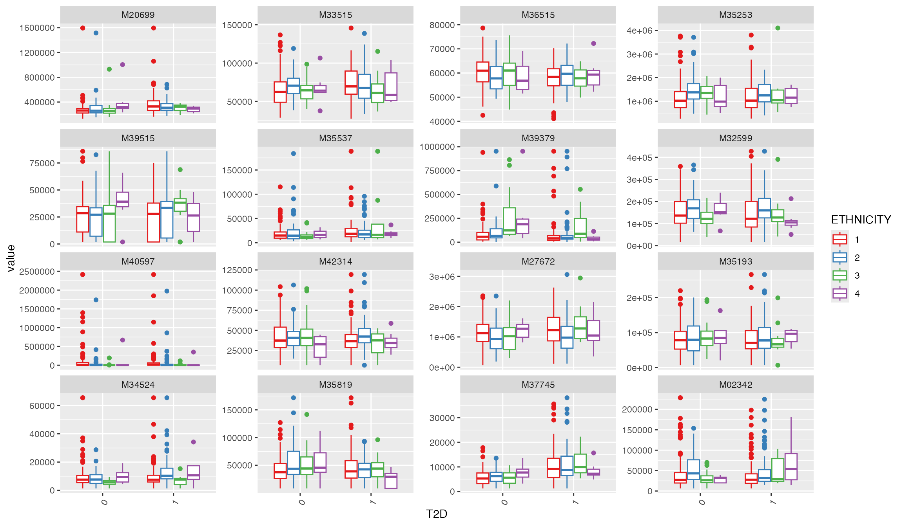
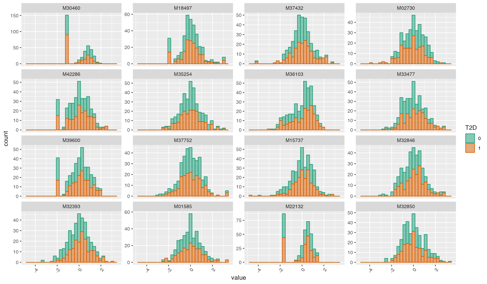
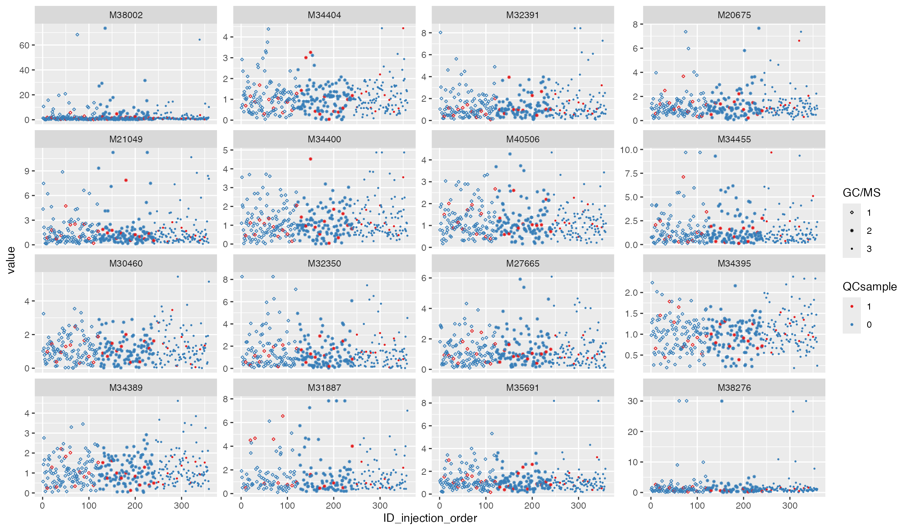
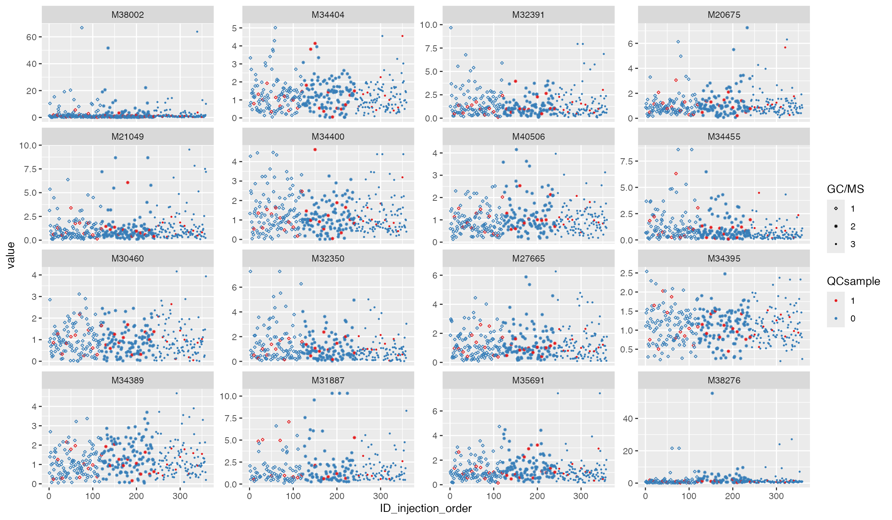
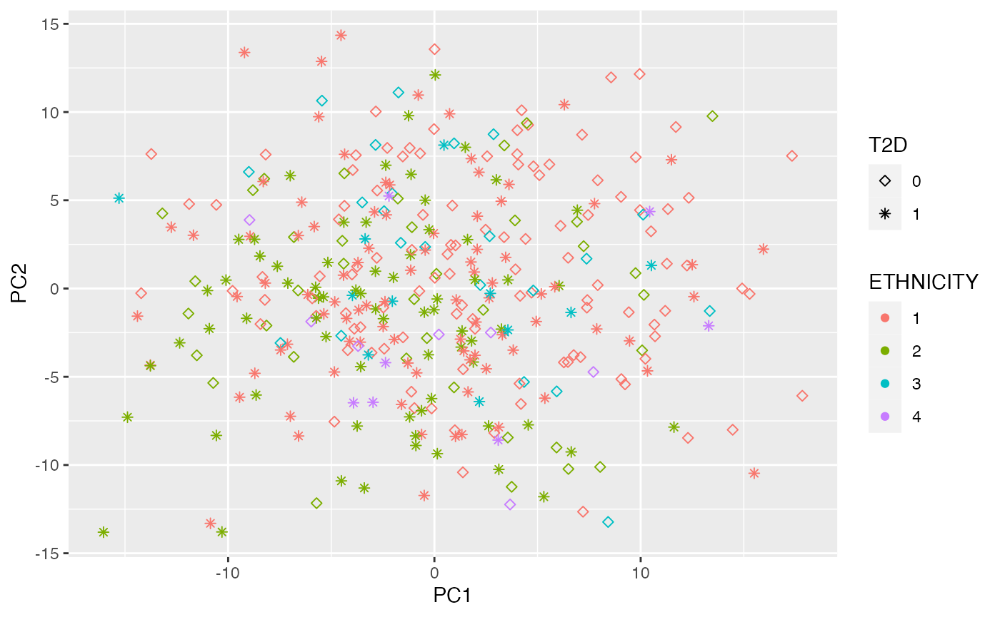
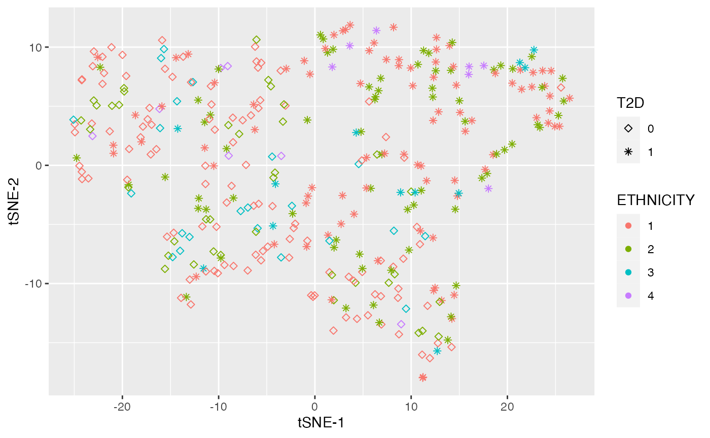
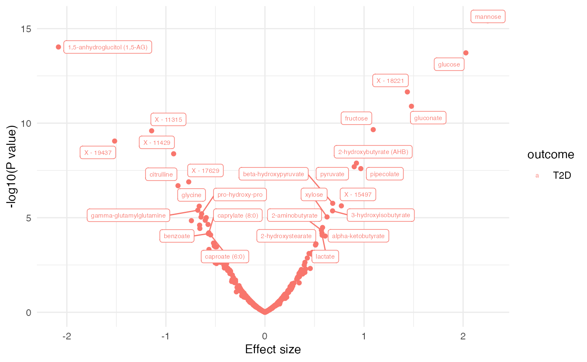
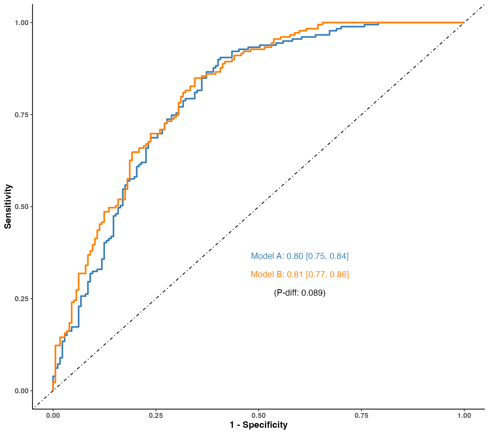

metabolomicsR: Tools to process, analyze,
and visualize metabolomic data.
metabolomicsR is a streamlined R package to preprocess, analyze, and visualize metabolomic data. We included a set of functions for sample and metabolite quality control, outlier detection, missing value imputation, dimensional reduction, normalization, data integration, regression analysis, annotation, and visualization of data and results. The metabolomicsR is designed to be a comprehensive R package that can be easily used by researchers with basic R programming skills. The framework designed here is also versatile and extensible to various methods and metabolomic platforms. Here, we demonstrate the step-by-step use of the main functions from this package.
Figure: Seamless workflow to preprocess, analyze,
and visualize metabolomic data in metabolomicsR

Data structure
We first designed a “Metabolite” class based on the object-oriented programming system S4 in R. For a particular “Metabolite” data, it will include “assayData” (eg. peak area data or batch-normalized data, samples in rows and metabolites in columns), “featureData” (metabolite annotation), “sampleData” (sample annotation), “featureID”, “sampleID”, “logs” (log information of data analysis process), and “miscData” (other ancillary data). For metabolites, current platforms typically measure ~1,000 features. It will be much easier to manipulate the data with samples in rows and metabolites in columns, rather than the SummarizedExperiment container where the columns represent samples.
Import data
To demonstrate the package, we obtained metabolomic data from Qatar Metabolomics Study on Diabetes, similar to the data format from non-targeted mass spectrometry by Metabolon. The dataset is available via figshare.
The data can be imported directly from excel, csv or other formats that imported into R.
library(metabolomicsR)
library(data.table)
library(ggplot2)
library(cowplot)
library(plotROC)
# Load the metabolomic dataset from an excel file
file_path <- base::system.file("extdata", "QMDiab_metabolomics_OrigScale.xlsx", package = "metabolomicsR", mustWork = TRUE)
df_plasma <- load_excel(path = file_path,
data_sheet = 1,
feature_sheet = 4,
sample_sheet = 8,
sampleID = "QMDiab-ID",
featureID = "BIOCHEMICAL"
)
# To save the data in disc.
# save_data(df_plasma, file = "~/test")In the “assayData”, the first column is the sample IDs to match with “sampleData”, the other columns are metabolite IDs to match with “featureData”.
click to show plasma data
df_plasma## An object of Metabolite
##
## *** @assayData (first and last 10 columns [ 356 * 759 ]) ***
## sampleID 1,11-Undecanedicarboxylic acid 1,2-dipalmitoylglycerol
## 1: QMDiab222 8578 NA
## 2: QMDiab113 15145 NA
## 3: QMDiab29 NA 96455
## 4: QMDiab243 19692 69444
## 5: QMDiab270 NA NA
## ---
## 352: QMDiab352 6689 116932
## 353: QMDiab135 7556 248824
## 354: QMDiab229 20252 80804
## 355: QMDiab202 7378 108152
## 356: QMDiab103 6667 57851
## 1,2-propanediol 1,3,7-trimethylurate 1,3-dihydroxyacetone
## 1: 103724 22259 104059
## 2: NA 39841 NA
## 3: 159945 10605 165416
## 4: 108965 38562 139866
## 5: 157617 4490 NA
## ---
## 352: 115737 34791 152711
## 353: 481008 4766 164853
## 354: 138253 13949 85019
## 355: 112229 21748 175918
## 356: 146948 8458 82064
## 1,3-dipalmitoylglycerol 1,5-anhydroglucitol (1,5-AG) 1,7-dimethylurate
## 1: 7067 357499 19986
## 2: 36542 440058 16620
## 3: 54209 355790 12220
## 4: 22412 185273 29537
## 5: 21958 692753 10256
## ---
## 352: 59120 178759 25326
## 353: 126065 103647 12253
## 354: 43072 330579 15124
## 355: 78154 106745 21434
## 356: 34234 534697 12979
## 1-arachidonoylglycerophosphocholine* X - 19183 X - 19299 X - 19302
## 1: 2173598 NA NA NA
## 2: 2464846 NA 9033 NA
## 3: 2613798 NA 10231 NA
## 4: 2543266 NA NA 12291
## 5: 2138029 NA 6775 NA
## ---
## 352: 864647 NA NA NA
## 353: 3018611 4769 NA NA
## 354: 1398965 NA NA NA
## 355: 2104899 NA NA NA
## 356: 992388 NA NA NA
## X - 19380 X - 19411 X - 19434 X - 19436 X - 19437 X - 19438 X - 19451
## 1: 158054 88569 7539 NA 64644 18055 NA
## 2: 125669 87268 12681 NA 52074 12805 2994
## 3: 194732 106360 7787 NA 31782 18467 NA
## 4: 152853 119643 NA NA 67713 12356 NA
## 5: 204978 149644 NA NA 108660 12479 NA
## ---
## 352: 195331 134564 NA NA 22141 17205 NA
## 353: 136120 75431 10876 NA 61867 28223 NA
## 354: 216380 128925 NA NA 84299 14936 NA
## 355: 162256 112923 NA NA 42586 51588 NA
## 356: 137705 112636 NA NA 89283 23515 10619
## X - 19574
## 1: NA
## 2: NA
## 3: NA
## 4: NA
## 5: NA
## ---
## 352: NA
## 353: 16573
## 354: NA
## 355: NA
## 356: NA
##
## *** @featureData (ID: featureID ) ***
## featureID PATHWAY_SORTORDER
## 1: 1,11-Undecanedicarboxylic acid 800.1
## 2: 1,2-dipalmitoylglycerol 1070
## 3: 1,2-propanediol 986
## 4: 1,3,7-trimethylurate 1805
## 5: 1,3-dihydroxyacetone 600
## ---
## 754: X - 19436 <NA>
## 755: X - 19437 <NA>
## 756: X - 19438 <NA>
## 757: X - 19451 <NA>
## 758: X - 19574 <NA>
## BIOCHEMICAL SUPER_PATHWAY
## 1: 1,11-Undecanedicarboxylic acid Lipid
## 2: 1,2-dipalmitoylglycerol Lipid
## 3: 1,2-propanediol Lipid
## 4: 1,3,7-trimethylurate Xenobiotics
## 5: 1,3-dihydroxyacetone Carbohydrate
## ---
## 754: X - 19436 <NA>
## 755: X - 19437 <NA>
## 756: X - 19438 <NA>
## 757: X - 19451 <NA>
## 758: X - 19574 <NA>
## SUB_PATHWAY COMP_ID PLATFORM
## 1: Fatty acid, dicarboxylate 43027 LC/MS Neg
## 2: Diacylglycerol 11953 GC/MS
## 3: Ketone bodies 38002 GC/MS
## 4: Xanthine metabolism 34404 LC/MS Neg
## 5: Glycolysis, gluconeogenesis, pyruvate metabolism 35963 GC/MS
## ---
## 754: <NA> 42912 LC/MS Neg
## 755: <NA> 42913 LC/MS Neg
## 756: <NA> 42914 LC/MS Neg
## 757: <NA> 42927 LC/MS Neg
## 758: <NA> 43130 LC/MS Neg
## RI MASS PUBCHEM CAS KEGG
## 1: 3578 243.2 10458 505-52-2; <NA>
## 2: 2600 145 99931 40290-32-2; <NA>
## 3: 1041 117 <NA> 57-55-6; C00583
## 4: 1988 209.1 79437 5415-44-1; C16361
## 5: 1263 103 670 96-26-4;62147-49-3; C00184
## ---
## 754: 4747 467.4 <NA> <NA> <NA>
## 755: 1150.0999999999999 397.1 <NA> <NA> <NA>
## 756: 1222.3 217.1 <NA> <NA> <NA>
## 757: 3728.5 239.1 <NA> <NA> <NA>
## 758: 4045.7 307.10000000000002 <NA> <NA> <NA>
## HMDb_ID COMP_IDstr
## 1: HMDB02327 M43027
## 2: HMDB07098 M11953
## 3: HMDB01881 M38002
## 4: HMDB02123 M34404
## 5: HMDB01882 M35963
## ---
## 754: <NA> M42912
## 755: <NA> M42913
## 756: <NA> M42914
## 757: <NA> M42927
## 758: <NA> M43130
##
## *** @sampleData (ID: sampleID ) ***
## sampleID AGE GENDER BMI ETHNICITY T2D
## 1: QMDiab222 34.50513 0 25.01021 2 0
## 2: QMDiab113 47.06639 1 28.36776 3 0
## 3: QMDiab29 55.49076 1 29.70564 1 0
## 4: QMDiab243 56.33402 1 23.14050 2 0
## 5: QMDiab270 35.63039 1 30.06229 1 0
## ---
## 352: QMDiab352 41.55510 1 31.22690 3 1
## 353: QMDiab135 52.55305 0 29.07577 2 1
## 354: QMDiab229 30.31348 0 22.22656 2 0
## 355: QMDiab202 49.40999 1 33.72008 1 1
## 356: QMDiab103 23.85489 0 35.96389 1 0
##
## *** @miscData ***
## integer(0)
##
## *** @logs ***
## 19/08/22 11:30:55: Import data from: /private/var/folders/mj/lsf2tqcx13d5tgl627mm9fxm0000gn/T/RtmpZ5htRD/temp_libpath862b4f79a4da/metabolomicsR/extdata/QMDiab_metabolomics_OrigScale.xlsx .
## 19/08/22 11:30:55: Initiate data: 356 samples and 758 features.The {update_Metabolite} function provides several
methods to update the data, including “injection_order”, “keep_feature”,
“remove_feature”, “keep_sample”, “remove_sample”,
“add_sample_annotation”, and “change_featureID”.
# change the feature ID to the column `COMP_IDstr`
df_plasma <- update_Metabolite(df_plasma, dataset = "COMP_IDstr", action = "change_featureID")click to show plasma data
df_plasma## An object of Metabolite
##
## *** @assayData (first and last 10 columns [ 356 * 759 ]) ***
## sampleID M43027 M11953 M38002 M34404 M35963 M35728 M20675 M34400 M33228
## 1: QMDiab222 8578 NA 103724 22259 104059 7067 357499 19986 2173598
## 2: QMDiab113 15145 NA NA 39841 NA 36542 440058 16620 2464846
## 3: QMDiab29 NA 96455 159945 10605 165416 54209 355790 12220 2613798
## 4: QMDiab243 19692 69444 108965 38562 139866 22412 185273 29537 2543266
## 5: QMDiab270 NA NA 157617 4490 NA 21958 692753 10256 2138029
## ---
## 352: QMDiab352 6689 116932 115737 34791 152711 59120 178759 25326 864647
## 353: QMDiab135 7556 248824 481008 4766 164853 126065 103647 12253 3018611
## 354: QMDiab229 20252 80804 138253 13949 85019 43072 330579 15124 1398965
## 355: QMDiab202 7378 108152 112229 21748 175918 78154 106745 21434 2104899
## 356: QMDiab103 6667 57851 146948 8458 82064 34234 534697 12979 992388
## M42659 M42775 M42778 M42856 M42887 M42910 M42912 M42913 M42914 M42927
## 1: NA NA NA 158054 88569 7539 NA 64644 18055 NA
## 2: NA 9033 NA 125669 87268 12681 NA 52074 12805 2994
## 3: NA 10231 NA 194732 106360 7787 NA 31782 18467 NA
## 4: NA NA 12291 152853 119643 NA NA 67713 12356 NA
## 5: NA 6775 NA 204978 149644 NA NA 108660 12479 NA
## ---
## 352: NA NA NA 195331 134564 NA NA 22141 17205 NA
## 353: 4769 NA NA 136120 75431 10876 NA 61867 28223 NA
## 354: NA NA NA 216380 128925 NA NA 84299 14936 NA
## 355: NA NA NA 162256 112923 NA NA 42586 51588 NA
## 356: NA NA NA 137705 112636 NA NA 89283 23515 10619
## M43130
## 1: NA
## 2: NA
## 3: NA
## 4: NA
## 5: NA
## ---
## 352: NA
## 353: 16573
## 354: NA
## 355: NA
## 356: NA
##
## *** @featureData (ID: featureID ) ***
## featureID PATHWAY_SORTORDER BIOCHEMICAL SUPER_PATHWAY
## 1: M43027 800.1 1,11-Undecanedicarboxylic acid Lipid
## 2: M11953 1070 1,2-dipalmitoylglycerol Lipid
## 3: M38002 986 1,2-propanediol Lipid
## 4: M34404 1805 1,3,7-trimethylurate Xenobiotics
## 5: M35963 600 1,3-dihydroxyacetone Carbohydrate
## ---
## 754: M42912 <NA> X - 19436 <NA>
## 755: M42913 <NA> X - 19437 <NA>
## 756: M42914 <NA> X - 19438 <NA>
## 757: M42927 <NA> X - 19451 <NA>
## 758: M43130 <NA> X - 19574 <NA>
## SUB_PATHWAY COMP_ID PLATFORM
## 1: Fatty acid, dicarboxylate 43027 LC/MS Neg
## 2: Diacylglycerol 11953 GC/MS
## 3: Ketone bodies 38002 GC/MS
## 4: Xanthine metabolism 34404 LC/MS Neg
## 5: Glycolysis, gluconeogenesis, pyruvate metabolism 35963 GC/MS
## ---
## 754: <NA> 42912 LC/MS Neg
## 755: <NA> 42913 LC/MS Neg
## 756: <NA> 42914 LC/MS Neg
## 757: <NA> 42927 LC/MS Neg
## 758: <NA> 43130 LC/MS Neg
## RI MASS PUBCHEM CAS KEGG
## 1: 3578 243.2 10458 505-52-2; <NA>
## 2: 2600 145 99931 40290-32-2; <NA>
## 3: 1041 117 <NA> 57-55-6; C00583
## 4: 1988 209.1 79437 5415-44-1; C16361
## 5: 1263 103 670 96-26-4;62147-49-3; C00184
## ---
## 754: 4747 467.4 <NA> <NA> <NA>
## 755: 1150.0999999999999 397.1 <NA> <NA> <NA>
## 756: 1222.3 217.1 <NA> <NA> <NA>
## 757: 3728.5 239.1 <NA> <NA> <NA>
## 758: 4045.7 307.10000000000002 <NA> <NA> <NA>
## HMDb_ID COMP_IDstr
## 1: HMDB02327 M43027
## 2: HMDB07098 M11953
## 3: HMDB01881 M38002
## 4: HMDB02123 M34404
## 5: HMDB01882 M35963
## ---
## 754: <NA> M42912
## 755: <NA> M42913
## 756: <NA> M42914
## 757: <NA> M42927
## 758: <NA> M43130
##
## *** @sampleData (ID: sampleID ) ***
## sampleID AGE GENDER BMI ETHNICITY T2D
## 1: QMDiab222 34.50513 0 25.01021 2 0
## 2: QMDiab113 47.06639 1 28.36776 3 0
## 3: QMDiab29 55.49076 1 29.70564 1 0
## 4: QMDiab243 56.33402 1 23.14050 2 0
## 5: QMDiab270 35.63039 1 30.06229 1 0
## ---
## 352: QMDiab352 41.55510 1 31.22690 3 1
## 353: QMDiab135 52.55305 0 29.07577 2 1
## 354: QMDiab229 30.31348 0 22.22656 2 0
## 355: QMDiab202 49.40999 1 33.72008 1 1
## 356: QMDiab103 23.85489 0 35.96389 1 0
##
## *** @miscData ***
## integer(0)
##
## *** @logs ***
## 19/08/22 11:30:55: Import data from: /private/var/folders/mj/lsf2tqcx13d5tgl627mm9fxm0000gn/T/RtmpZ5htRD/temp_libpath862b4f79a4da/metabolomicsR/extdata/QMDiab_metabolomics_OrigScale.xlsx .
## 19/08/22 11:30:55: Initiate data: 356 samples and 758 features.
## 19/08/22 11:30:55: Update data, action: change_featureID, 356 samples and 758 features.
# load urine metabolomic data
df_urine <- load_excel(path = file_path,
data_sheet = 2,
feature_sheet = 5,
sample_sheet = 9,
sampleID = "QMDiab-ID",
featureID = "BIOCHEMICAL"
)
df_urine <- update_Metabolite(df_urine, dataset = "COMP_IDstr", action = "change_featureID")click to show urine data
df_urine## An object of Metabolite
##
## *** @assayData (first and last 10 columns [ 359 * 892 ]) ***
## sampleID M38002 M34404 M32391 M20675 M21049 M34400 M40506 M34455
## 1: QMDiab254 1189337 146900 265120 53499 15379982 619745 53261 227263
## 2: QMDiab290 9944836 716781 2042008 71989 26406420 1988553 123129 1221563
## 3: QMDiab54 926350 182438 775726 48752 7551248 1159521 72837 215868
## 4: QMDiab55 305459 579097 511122 21423 4655848 1102500 131674 NA
## 5: QMDiab319 574761 295176 175826 91788 2762680 417870 21631 243512
## ---
## 355: QMDiab70 1139559 117975 326903 NA 10051449 406266 234997 183234
## 356: QMDiab118 1517228 234288 NA 24350 2613189 375914 51929 NA
## 357: QMDiab65 1028291 352068 609710 113673 29650920 621166 130037 549992
## 358: QMDiab248 1807105 338741 148964 62614 937893 603113 48151 293379
## 359: QMDiab4 10103832 203176 245175 50822 28406416 243598 74996 696766
## M30460 M42272 M42314 M42335 M42351 M42352 M42553 M42856 M42913 M43112
## 1: 5502123 96913 31056 33430 NA 35558 NA 23369 21931 NA
## 2: 17475172 124745 66036 39595 NA 732853 NA 28220 27811 NA
## 3: 6423459 44266 23363 39645 NA 62630 NA 13148 25018 NA
## 4: 4246983 77365 40193 46686 NA 92981 NA 22845 23620 NA
## 5: 2780633 24081 16319 25583 NA 31037 NA 29122 41337 NA
## ---
## 355: 1407294 54919 52317 78413 NA 38453 NA 33084 195136 NA
## 356: 1856043 42309 17973 25751 NA 12967 NA 15268 31577 NA
## 357: 10131966 110335 40228 34299 NA 108341 NA 52714 33244 NA
## 358: NA 36055 29644 22465 NA 19287 NA 27299 36462 NA
## 359: 27087992 185546 45205 60944 NA 149210 9804 35991 186372 NA
## M43129 M43130
## 1: NA NA
## 2: NA 7215
## 3: NA 8596
## 4: NA NA
## 5: NA NA
## ---
## 355: NA 5700
## 356: NA 11083
## 357: NA 6296
## 358: NA NA
## 359: NA 7482
##
## *** @featureData (ID: featureID ) ***
## featureID PATHWAY_SORTORDER BIOCHEMICAL SUPER_PATHWAY
## 1: M38002 986 1,2-propanediol Lipid
## 2: M34404 1805 1,3,7-trimethylurate Xenobiotics
## 3: M32391 1802 1,3-dimethylurate Xenobiotics
## 4: M20675 583 1,5-anhydroglucitol (1,5-AG) Carbohydrate
## 5: M21049 591 1,6-anhydroglucose Carbohydrate
## ---
## 887: M42856 <NA> X - 19380 <NA>
## 888: M42913 <NA> X - 19437 <NA>
## 889: M43112 <NA> X - 19556 <NA>
## 890: M43129 <NA> X - 19573 <NA>
## 891: M43130 <NA> X - 19574 <NA>
## SUB_PATHWAY COMP_ID PLATFORM
## 1: Ketone bodies 38002 GC/MS
## 2: Xanthine metabolism 34404 LC/MS Neg
## 3: Xanthine metabolism 32391 GC/MS
## 4: Glycolysis, gluconeogenesis, pyruvate metabolism 20675 LC/MS Neg
## 5: Glycolysis, gluconeogenesis, pyruvate metabolism 21049 GC/MS
## ---
## 887: <NA> 42856 LC/MS Neg
## 888: <NA> 42913 LC/MS Neg
## 889: <NA> 43112 LC/MS Pos
## 890: <NA> 43129 LC/MS Neg
## 891: <NA> 43130 LC/MS Neg
## RI MASS PUBCHEM CAS KEGG HMDb_ID
## 1: 1041 117 <NA> 57-55-6; C00583 HMDB01881
## 2: 1988 209.1 79437 5415-44-1; C16361 HMDB02123
## 3: 1937 325.10000000000002 70346 944-73-0 ; <NA> HMDB01857
## 4: 808 163.19999999999999 <NA> 154-58-5; C07326 HMDB02712
## 5: 1679.5 204.1 11412545 498-07-7; <NA> HMDB00640
## ---
## 887: 2287 412.4 <NA> <NA> <NA> <NA>
## 888: 1150.0999999999999 397.1 <NA> <NA> <NA> <NA>
## 889: 4249.8999999999996 404.9 <NA> <NA> <NA> <NA>
## 890: 3906.5 403.2 <NA> <NA> <NA> <NA>
## 891: 4045.7 307.10000000000002 <NA> <NA> <NA> <NA>
## COMP_IDstr
## 1: M38002
## 2: M34404
## 3: M32391
## 4: M20675
## 5: M21049
## ---
## 887: M42856
## 888: M42913
## 889: M43112
## 890: M43129
## 891: M43130
##
## *** @sampleData (ID: sampleID ) ***
## sampleID AGE GENDER BMI ETHNICITY T2D
## 1: QMDiab254 53.10335 0 32.05128 1 0
## 2: QMDiab290 39.79192 1 30.51426 4 0
## 3: QMDiab54 36.82136 0 24.16831 1 0
## 4: QMDiab55 34.75975 0 44.44444 1 1
## 5: QMDiab319 50.17933 1 27.18090 1 1
## ---
## 355: QMDiab70 35.40315 1 33.83403 1 1
## 356: QMDiab118 49.06229 1 25.64494 1 0
## 357: QMDiab65 47.22245 1 23.38435 1 0
## 358: QMDiab248 56.39151 0 27.58621 1 1
## 359: QMDiab4 24.22450 0 41.66521 1 0
##
## *** @miscData ***
## integer(0)
##
## *** @logs ***
## 19/08/22 11:30:56: Import data from: /private/var/folders/mj/lsf2tqcx13d5tgl627mm9fxm0000gn/T/RtmpZ5htRD/temp_libpath862b4f79a4da/metabolomicsR/extdata/QMDiab_metabolomics_OrigScale.xlsx .
## 19/08/22 11:30:56: Initiate data: 359 samples and 891 features.
## 19/08/22 11:30:56: Update data, action: change_featureID, 359 samples and 891 features.
# load saliva metatabolomic data
df_saliva <- load_excel(path = file_path,
data_sheet = 3,
feature_sheet = 6,
sample_sheet = 10,
sampleID = "QMDiab-ID",
featureID = "BIOCHEMICAL"
)
df_saliva <- update_Metabolite(df_saliva, dataset = "COMP_IDstr", action = "change_featureID")click to show saliva data
df_saliva## An object of Metabolite
##
## *** @assayData (first and last 10 columns [ 321 * 603 ]) ***
## sampleID M43027 M38002 M01654 M35963 M35690 M20675 M21049 M34400 M35628
## 1: QMDiab370 11974 720004 NA NA 91544 211457 NA 2661 NA
## 2: QMDiab245 15485 481889 24313 53097 80819 175312 25921 2250 27847
## 3: QMDiab34 13916 979243 NA 44158 104042 271930 NA NA NA
## 4: QMDiab287 28023 825577 NA 57600 157057 50692 NA NA NA
## 5: QMDiab355 22830 1150408 NA 63460 225965 741408 71523 3739 NA
## ---
## 317: QMDiab202 16493 488210 NA NA 116683 158562 NA 3496 18241
## 318: QMDiab80 15254 3345272 23456 36201 120444 295726 107821 NA 14988
## 319: QMDiab107 31452 578446 NA 20563 245882 234635 NA NA NA
## 320: QMDiab352 18975 280464 NA NA 20491 77539 NA NA 19239
## 321: QMDiab127 16344 881910 64403 44381 206525 912153 NA NA 12066
## M42851 M42877 M42913 M42914 M43042 M43049 M43050 M43110 M43122 M43128
## 1: 4937 NA 5390 NA 22149 4997 5548 NA NA 14190
## 2: 3316 NA 10883 1110 22797 8284 NA NA NA 15273
## 3: 3260 NA NA NA 15291 NA NA NA NA 10602
## 4: 3463 NA 6735 NA 20655 5779 NA NA NA 13165
## 5: 3887 NA 3670 NA 45619 6922 NA 12023 NA 15046
## ---
## 317: NA NA 7243 NA 14632 NA NA NA NA 15163
## 318: NA NA 10592 3708 15018 5433 NA NA NA 21337
## 319: NA NA NA 4409 37399 9265 NA 42065 NA 37183
## 320: NA NA 9140 4056 3362 NA NA NA NA 21376
## 321: NA 2645 7590 4894 25546 5422 NA NA NA 15142
## M43137
## 1: NA
## 2: NA
## 3: NA
## 4: NA
## 5: NA
## ---
## 317: NA
## 318: NA
## 319: NA
## 320: NA
## 321: NA
##
## *** @featureData (ID: featureID ) ***
## featureID PATHWAY_SORTORDER BIOCHEMICAL SUPER_PATHWAY
## 1: M43027 800.1 1,11-undecanedicarboxylate Lipid
## 2: M38002 986 1,2-propanediol Lipid
## 3: M01654 273 1,3-diaminopropane Amino acid
## 4: M35963 600 1,3-dihydroxyacetone Carbohydrate
## 5: M35690 1494 1,4-butanediol Xenobiotics
## ---
## 598: M43050 <NA> X - 19497 <NA>
## 599: M43110 <NA> X - 19554 <NA>
## 600: M43122 <NA> X - 19566 <NA>
## 601: M43128 <NA> X - 19572 <NA>
## 602: M43137 <NA> X - 19581 <NA>
## SUB_PATHWAY COMP_ID PLATFORM
## 1: Fatty acid, dicarboxylate 43027 LC/MS Neg
## 2: Ketone bodies 38002 GC/MS
## 3: Urea cycle; arginine-, proline-, metabolism 1654 GC/MS
## 4: Glycolysis, gluconeogenesis, pyruvate metabolism 35963 GC/MS
## 5: Chemical 35690 GC/MS
## ---
## 598: <NA> 43050 LC/MS Neg
## 599: <NA> 43110 LC/MS Pos
## 600: <NA> 43122 LC/MS Neg
## 601: <NA> 43128 LC/MS Neg
## 602: <NA> 43137 LC/MS Neg
## RI MASS PUBCHEM CAS KEGG HMDb_ID
## 1: 3578 243.2 10458 505-52-2; <NA> HMDB02327
## 2: 1041 117 <NA> 57-55-6; C00583 HMDB01881
## 3: 1633.8 174 428 109-76-2; C00986 HMDB00002
## 4: 1263 103 670 96-26-4;62147-49-3; C00184 HMDB01882
## 5: 1208 115.8 <NA> 110-63-4; <NA> <NA>
## ---
## 598: 3657.6 227.3 <NA> <NA> <NA> <NA>
## 599: 3618.7 471 <NA> <NA> <NA> <NA>
## 600: 2953.2 744.5 <NA> <NA> <NA> <NA>
## 601: 3761.2 431.3 <NA> <NA> <NA> <NA>
## 602: 4949.6000000000004 938.5 <NA> <NA> <NA> <NA>
## COMP_IDstr
## 1: M43027
## 2: M38002
## 3: M01654
## 4: M35963
## 5: M35690
## ---
## 598: M43050
## 599: M43110
## 600: M43122
## 601: M43128
## 602: M43137
##
## *** @sampleData (ID: sampleID ) ***
## sampleID AGE GENDER BMI ETHNICITY T2D
## 1: QMDiab370 56.49829 1 25.76591 1 1
## 2: QMDiab245 51.51540 0 23.89943 1 0
## 3: QMDiab34 28.00548 0 23.90118 3 0
## 4: QMDiab287 41.43463 0 31.47107 4 1
## 5: QMDiab355 28.34771 0 25.16103 1 0
## ---
## 317: QMDiab202 49.40999 1 33.72008 1 1
## 318: QMDiab80 25.86995 0 29.89101 1 0
## 319: QMDiab107 38.50240 1 24.60973 2 0
## 320: QMDiab352 41.55510 1 31.22690 3 1
## 321: QMDiab127 34.69952 1 30.47797 1 0
##
## *** @miscData ***
## integer(0)
##
## *** @logs ***
## 19/08/22 11:30:56: Import data from: /private/var/folders/mj/lsf2tqcx13d5tgl627mm9fxm0000gn/T/RtmpZ5htRD/temp_libpath862b4f79a4da/metabolomicsR/extdata/QMDiab_metabolomics_OrigScale.xlsx .
## 19/08/22 11:30:56: Initiate data: 321 samples and 602 features.
## 19/08/22 11:30:56: Update data, action: change_featureID, 321 samples and 602 features.Quality control pipeline
We provided a pipeline for metabolite and sample quality control (QC) procedures. In the QC pipeline, we included the following functions: remove metabolites or samples beyond a particular missing rate threshold (e.g., 0.5), detect outliers (e.g., ± 5 standard deviations) and replace outliers with missing values or winsorize outliers, and various popular methods to impute missing values (e.g., half of the minimum value, median, zero, or nearest neighbor averaging [kNN] method). All the steps can be customized that have been implemented in the “QC_pipeline” function or be used from each individual function (eg. “filter_column_missing_rate”, “replace_outlier”, and “impute”).
First, we display the QC metrics using the {plot_QC}
function
p <- plot_QC(df_plasma)
p$p
click to show plasma QC metrics
p## $column_constant
## ID x
## 1: M43027 FALSE
## 2: M11953 FALSE
## 3: M38002 FALSE
## 4: M34404 FALSE
## 5: M35963 FALSE
## ---
## 754: M42912 TRUE
## 755: M42913 FALSE
## 756: M42914 FALSE
## 757: M42927 FALSE
## 758: M43130 FALSE
##
## $column_missing_rate
## ID x
## 1: M43027 0.151685393
## 2: M11953 0.146067416
## 3: M38002 0.056179775
## 4: M34404 0.036516854
## 5: M35963 0.081460674
## ---
## 754: M42912 0.997191011
## 755: M42913 0.000000000
## 756: M42914 0.005617978
## 757: M42927 0.764044944
## 758: M43130 0.949438202
##
## $row_missing_rate
## ID x
## 1: QMDiab222 0.3588391
## 2: QMDiab113 0.2968338
## 3: QMDiab29 0.2862797
## 4: QMDiab243 0.2572559
## 5: QMDiab270 0.3680739
## ---
## 352: QMDiab352 0.2902375
## 353: QMDiab135 0.3007916
## 354: QMDiab229 0.3284960
## 355: QMDiab202 0.3021108
## 356: QMDiab103 0.3034301
##
## $outlier_rate
## ID x
## 1: M43027 0.006622517
## 2: M11953 0.000000000
## 3: M38002 0.011904762
## 4: M34404 0.005830904
## 5: M35963 0.000000000
## ---
## 754: M42912 NaN
## 755: M42913 0.000000000
## 756: M42914 0.008474576
## 757: M42927 0.000000000
## 758: M43130 0.000000000
##
## $p
df_plasma_QC <- QC_pipeline(df_plasma, replace_outlier_method = "winsorize", impute_method = NULL)##
## Constant columns n = 37
##
## Number of columns with a missing rate >= 0.5 : n = 176
## click to show plasma data after QC
df_plasma_QC## An object of Metabolite
##
## *** @assayData (first and last 10 columns [ 356 * 546 ]) ***
## sampleID M43027 M11953 M38002 M34404 M35963 M35728 M20675 M34400 M33228
## 1: QMDiab222 8578 NA 103724 22259 104059 7067 357499 19986 2173598
## 2: QMDiab113 15145 NA NA 39841 NA 36542 440058 16620 2464846
## 3: QMDiab29 NA 96455 159945 10605 165416 54209 355790 12220 2613798
## 4: QMDiab243 19692 69444 108965 38562 139866 22412 185273 29537 2543266
## 5: QMDiab270 NA NA 157617 4490 NA 21958 692753 10256 2138029
## ---
## 352: QMDiab352 6689 116932 115737 34791 152711 59120 178759 25326 864647
## 353: QMDiab135 7556 248824 481008 4766 164853 126065 103647 12253 3018611
## 354: QMDiab229 20252 80804 138253 13949 85019 43072 330579 15124 1398965
## 355: QMDiab202 7378 108152 112229 21748 175918 78154 106745 21434 2104899
## 356: QMDiab103 6667 57851 146948 8458 82064 34234 534697 12979 992388
## M42307 M42314 M42544 M42548 M42549 M42552 M42554 M42856 M42887 M42913
## 1: NA 30592 3839 13734 NA NA 37654 158054 88569 64644
## 2: 6978 81380 4128 15288 NA 4697 28262 125669 87268 52074
## 3: 17943 104253 6788 18861 6761 5096 30139 194732 106360 31782
## 4: 11069 73203 8493 12138 10371 11207 21406 152853 119643 67713
## 5: 7904 28846 7130 12843 3150 4556 14976 204978 149644 108660
## ---
## 352: 11539 40487 9988 6173 7678 9008 30501 195331 134564 22141
## 353: 5441 37950 NA 18464 NA NA 43687 136120 75431 61867
## 354: NA 18098 5766 8244 5932 NA 18728 216380 128925 84299
## 355: 8119 70566 8470 11932 NA 5895 27858 162256 112923 42586
## 356: 7647 46836 7420 8019 NA 8253 32159 137705 112636 89283
## M42914
## 1: 18055
## 2: 12805
## 3: 18467
## 4: 12356
## 5: 12479
## ---
## 352: 17205
## 353: 28223
## 354: 14936
## 355: 51588
## 356: 23515
##
## *** @featureData (ID: featureID ) ***
## featureID PATHWAY_SORTORDER BIOCHEMICAL SUPER_PATHWAY
## 1: M43027 800.1 1,11-Undecanedicarboxylic acid Lipid
## 2: M11953 1070 1,2-dipalmitoylglycerol Lipid
## 3: M38002 986 1,2-propanediol Lipid
## 4: M34404 1805 1,3,7-trimethylurate Xenobiotics
## 5: M35963 600 1,3-dihydroxyacetone Carbohydrate
## ---
## 541: M42554 <NA> X - 19147 <NA>
## 542: M42856 <NA> X - 19380 <NA>
## 543: M42887 <NA> X - 19411 <NA>
## 544: M42913 <NA> X - 19437 <NA>
## 545: M42914 <NA> X - 19438 <NA>
## SUB_PATHWAY COMP_ID PLATFORM
## 1: Fatty acid, dicarboxylate 43027 LC/MS Neg
## 2: Diacylglycerol 11953 GC/MS
## 3: Ketone bodies 38002 GC/MS
## 4: Xanthine metabolism 34404 LC/MS Neg
## 5: Glycolysis, gluconeogenesis, pyruvate metabolism 35963 GC/MS
## ---
## 541: <NA> 42554 LC/MS Neg
## 542: <NA> 42856 LC/MS Neg
## 543: <NA> 42887 LC/MS Neg
## 544: <NA> 42913 LC/MS Neg
## 545: <NA> 42914 LC/MS Neg
## RI MASS PUBCHEM CAS KEGG HMDb_ID
## 1: 3578 243.2 10458 505-52-2; <NA> HMDB02327
## 2: 2600 145 99931 40290-32-2; <NA> HMDB07098
## 3: 1041 117 <NA> 57-55-6; C00583 HMDB01881
## 4: 1988 209.1 79437 5415-44-1; C16361 HMDB02123
## 5: 1263 103 670 96-26-4;62147-49-3; C00184 HMDB01882
## ---
## 541: 4730.8999999999996 283.3 <NA> <NA> <NA> <NA>
## 542: 2287 412.4 <NA> <NA> <NA> <NA>
## 543: 1308 383.3 <NA> <NA> <NA> <NA>
## 544: 1150.0999999999999 397.1 <NA> <NA> <NA> <NA>
## 545: 1222.3 217.1 <NA> <NA> <NA> <NA>
## COMP_IDstr
## 1: M43027
## 2: M11953
## 3: M38002
## 4: M34404
## 5: M35963
## ---
## 541: M42554
## 542: M42856
## 543: M42887
## 544: M42913
## 545: M42914
##
## *** @sampleData (ID: sampleID ) ***
## sampleID AGE GENDER BMI ETHNICITY T2D
## 1: QMDiab222 34.50513 0 25.01021 2 0
## 2: QMDiab113 47.06639 1 28.36776 3 0
## 3: QMDiab29 55.49076 1 29.70564 1 0
## 4: QMDiab243 56.33402 1 23.14050 2 0
## 5: QMDiab270 35.63039 1 30.06229 1 0
## ---
## 352: QMDiab352 41.55510 1 31.22690 3 1
## 353: QMDiab135 52.55305 0 29.07577 2 1
## 354: QMDiab229 30.31348 0 22.22656 2 0
## 355: QMDiab202 49.40999 1 33.72008 1 1
## 356: QMDiab103 23.85489 0 35.96389 1 0
##
## *** @miscData ***
## integer(0)
##
## *** @logs ***
## 19/08/22 11:30:55: Import data from: /private/var/folders/mj/lsf2tqcx13d5tgl627mm9fxm0000gn/T/RtmpZ5htRD/temp_libpath862b4f79a4da/metabolomicsR/extdata/QMDiab_metabolomics_OrigScale.xlsx .
## 19/08/22 11:30:55: Initiate data: 356 samples and 758 features.
## 19/08/22 11:30:55: Update data, action: change_featureID, 356 samples and 758 features.
##
## 19/08/22 11:31:00: Run QC pipeline.
## 19/08/22 11:31:00: Filter data with a constant column, removed 37 features.
## 19/08/22 11:31:00: Update data, action: keep_feature, 356 samples and 721 features.
## 19/08/22 11:31:00: Filter data with a missing rate >= 0.5, removed 175 features.
## 19/08/22 11:31:00: Update data, action: keep_feature, 356 samples and 545 features.
## 19/08/22 11:31:01: Replace outliers using `winsorize` method 5 SDs.For the urine QC metrics:
p <- plot_QC(df_urine)
p$p
df_urine_QC <- QC_pipeline(df_urine, replace_outlier_method = "winsorize", impute_method = NULL)##
## Constant columns n = 28
##
## Number of columns with a missing rate >= 0.5 : n = 77
## click to show urine data after QC
df_urine_QC## An object of Metabolite
##
## *** @assayData (first and last 10 columns [ 359 * 787 ]) ***
## sampleID M38002 M34404 M32391 M20675 M21049 M34400 M40506 M34455
## 1: QMDiab254 1189337 146900 265120 53499 15379982 619745 53261 227263
## 2: QMDiab290 9944836 716781 2042008 71989 26406420 1988553 123129 1221563
## 3: QMDiab54 926350 182438 775726 48752 7551248 1159521 72837 215868
## 4: QMDiab55 305459 579097 511122 21423 4655848 1102500 131674 NA
## 5: QMDiab319 574761 295176 175826 91788 2762680 417870 21631 243512
## ---
## 355: QMDiab70 1139559 117975 326903 NA 10051449 406266 234997 183234
## 356: QMDiab118 1517228 234288 NA 24350 2613189 375914 51929 NA
## 357: QMDiab65 1028291 352068 609710 113673 29650920 621166 130037 549992
## 358: QMDiab248 1807105 338741 148964 62614 937893 603113 48151 293379
## 359: QMDiab4 10103832 203176 245175 50822 28406416 243598 74996 696766
## M30460 M41595 M41702 M41709 M41768 M41837 M42272 M42314 M42335 M42352
## 1: 5502123 74988 29007 4223 17008 5636 96913 31056 33430 35558
## 2: 17475172 66278 101935 34251 14937 9552 124745 66036 39595 652059
## 3: 6423459 74225 51295 14090 32971 9104 44266 23363 39645 62630
## 4: 4246983 63809 31054 6151 8054 15148 77365 40193 46686 92981
## 5: 2780633 40804 8307 3715 31370 5993 24081 16319 25583 31037
## ---
## 355: 1407294 67664 36157 NA 29194 15652 54919 52317 78413 38453
## 356: 1856043 34332 29877 30817 5029 4603 42309 17973 25751 12967
## 357: 10131966 57310 22374 NA 19358 9598 110335 40228 34299 108341
## 358: NA 26670 8525 7059 13231 9698 36055 29644 22465 19287
## 359: 27087992 95140 66285 20229 35845 18570 185546 45205 60944 149210
## M42856 M42913
## 1: 23369 21931
## 2: 28220 27811
## 3: 13148 25018
## 4: 22845 23620
## 5: 29122 41337
## ---
## 355: 33084 195136
## 356: 15268 31577
## 357: 52714 33244
## 358: 27299 36462
## 359: 35991 186372
##
## *** @featureData (ID: featureID ) ***
## featureID PATHWAY_SORTORDER BIOCHEMICAL SUPER_PATHWAY
## 1: M38002 986 1,2-propanediol Lipid
## 2: M34404 1805 1,3,7-trimethylurate Xenobiotics
## 3: M32391 1802 1,3-dimethylurate Xenobiotics
## 4: M20675 583 1,5-anhydroglucitol (1,5-AG) Carbohydrate
## 5: M21049 591 1,6-anhydroglucose Carbohydrate
## ---
## 782: M42314 <NA> X - 18929 <NA>
## 783: M42335 <NA> X - 18948 <NA>
## 784: M42352 <NA> X - 18965 <NA>
## 785: M42856 <NA> X - 19380 <NA>
## 786: M42913 <NA> X - 19437 <NA>
## SUB_PATHWAY COMP_ID PLATFORM
## 1: Ketone bodies 38002 GC/MS
## 2: Xanthine metabolism 34404 LC/MS Neg
## 3: Xanthine metabolism 32391 GC/MS
## 4: Glycolysis, gluconeogenesis, pyruvate metabolism 20675 LC/MS Neg
## 5: Glycolysis, gluconeogenesis, pyruvate metabolism 21049 GC/MS
## ---
## 782: <NA> 42314 LC/MS Pos
## 783: <NA> 42335 LC/MS Neg
## 784: <NA> 42352 LC/MS Neg
## 785: <NA> 42856 LC/MS Neg
## 786: <NA> 42913 LC/MS Neg
## RI MASS PUBCHEM CAS KEGG HMDb_ID
## 1: 1041 117 <NA> 57-55-6; C00583 HMDB01881
## 2: 1988 209.1 79437 5415-44-1; C16361 HMDB02123
## 3: 1937 325.10000000000002 70346 944-73-0 ; <NA> HMDB01857
## 4: 808 163.19999999999999 <NA> 154-58-5; C07326 HMDB02712
## 5: 1679.5 204.1 11412545 498-07-7; <NA> HMDB00640
## ---
## 782: 3881.1 319.2 <NA> <NA> <NA> <NA>
## 783: 2728.6 389.1 <NA> <NA> <NA> <NA>
## 784: 4727 442.2 <NA> <NA> <NA> <NA>
## 785: 2287 412.4 <NA> <NA> <NA> <NA>
## 786: 1150.0999999999999 397.1 <NA> <NA> <NA> <NA>
## COMP_IDstr
## 1: M38002
## 2: M34404
## 3: M32391
## 4: M20675
## 5: M21049
## ---
## 782: M42314
## 783: M42335
## 784: M42352
## 785: M42856
## 786: M42913
##
## *** @sampleData (ID: sampleID ) ***
## sampleID AGE GENDER BMI ETHNICITY T2D
## 1: QMDiab254 53.10335 0 32.05128 1 0
## 2: QMDiab290 39.79192 1 30.51426 4 0
## 3: QMDiab54 36.82136 0 24.16831 1 0
## 4: QMDiab55 34.75975 0 44.44444 1 1
## 5: QMDiab319 50.17933 1 27.18090 1 1
## ---
## 355: QMDiab70 35.40315 1 33.83403 1 1
## 356: QMDiab118 49.06229 1 25.64494 1 0
## 357: QMDiab65 47.22245 1 23.38435 1 0
## 358: QMDiab248 56.39151 0 27.58621 1 1
## 359: QMDiab4 24.22450 0 41.66521 1 0
##
## *** @miscData ***
## integer(0)
##
## *** @logs ***
## 19/08/22 11:30:56: Import data from: /private/var/folders/mj/lsf2tqcx13d5tgl627mm9fxm0000gn/T/RtmpZ5htRD/temp_libpath862b4f79a4da/metabolomicsR/extdata/QMDiab_metabolomics_OrigScale.xlsx .
## 19/08/22 11:30:56: Initiate data: 359 samples and 891 features.
## 19/08/22 11:30:56: Update data, action: change_featureID, 359 samples and 891 features.
##
## 19/08/22 11:31:03: Run QC pipeline.
## 19/08/22 11:31:03: Filter data with a constant column, removed 28 features.
## 19/08/22 11:31:03: Update data, action: keep_feature, 359 samples and 863 features.
## 19/08/22 11:31:04: Filter data with a missing rate >= 0.5, removed 76 features.
## 19/08/22 11:31:04: Update data, action: keep_feature, 359 samples and 786 features.
## 19/08/22 11:31:04: Replace outliers using `winsorize` method 5 SDs.
p <- plot_QC(df_saliva)
p$p
df_saliva_QC <- QC_pipeline(df_saliva, replace_outlier_method = "winsorize", impute_method = NULL)##
## Constant columns n = 35
##
## Number of columns with a missing rate >= 0.5 : n = 203
## click to show saliva data after QC
df_saliva_QC## An object of Metabolite
##
## *** @assayData (first and last 10 columns [ 321 * 365 ]) ***
## sampleID M43027 M38002 M35690 M20675 M35628 M37536 M37752 M35691 M38276
## 1: QMDiab370 11974 720004 91544 211457 NA NA 121286 352891 161984
## 2: QMDiab245 15485 481889 80819 175312 27847 24251 78051 179709 155695
## 3: QMDiab34 13916 979243 104042 271930 NA 19333 54685 58106 99814
## 4: QMDiab287 28023 825577 157057 50692 NA 22527 134397 48854 134122
## 5: QMDiab355 22830 1150408 225965 741408 NA 67922 113970 989663 232232
## ---
## 317: QMDiab202 16493 488210 116683 158562 18241 54375 119442 302910 345072
## 318: QMDiab80 15254 3345272 120444 295726 14988 112052 98093 1567170 445473
## 319: QMDiab107 31452 578446 245882 234635 NA NA 74245 171205 132903
## 320: QMDiab352 18975 280464 20491 77539 19239 35706 53731 95315 97904
## 321: QMDiab127 16344 881910 206525 912153 12066 30309 102026 843075 941156
## M41491 M41548 M41921 M42238 M42272 M42741 M42851 M42913 M43042 M43049
## 1: 404368 1007590 10148 6156 2352 NA 4937 5390 22149 4997
## 2: 360478 641392 11972 5093 NA 13502 3316 10883 22797 8284
## 3: 368498 741774 4553 4875 9858 NA 3260 NA 15291 NA
## 4: 900064 429374 7717 NA 6371 NA 3463 6735 20655 5779
## 5: 506638 786827 7807 NA 11181 16551 3887 3670 45619 6922
## ---
## 317: 368498 264313 12567 NA 11743 12683 NA 7243 14632 NA
## 318: 623000 367782 29507 NA NA 32002 NA 10592 15018 5433
## 319: 983332 883025 13123 4657 NA 19707 NA NA 37399 9265
## 320: 85130 230107 15529 NA NA 4080 NA 9140 3362 NA
## 321: 902186 NA 17118 9253 4176 60963 NA 7590 25546 5422
## M43128
## 1: 14190
## 2: 15273
## 3: 10602
## 4: 13165
## 5: 15046
## ---
## 317: 15163
## 318: 21337
## 319: 37183
## 320: 21376
## 321: 15142
##
## *** @featureData (ID: featureID ) ***
## featureID PATHWAY_SORTORDER BIOCHEMICAL
## 1: M43027 800.1 1,11-undecanedicarboxylate
## 2: M38002 986 1,2-propanediol
## 3: M35690 1494 1,4-butanediol
## 4: M20675 583 1,5-anhydroglucitol (1,5-AG)
## 5: M35628 996 1-oleoylglycerophosphoethanolamine
## ---
## 360: M42851 <NA> X - 19375
## 361: M42913 <NA> X - 19437
## 362: M43042 <NA> X - 19489
## 363: M43049 <NA> X - 19496
## 364: M43128 <NA> X - 19572
## SUPER_PATHWAY SUB_PATHWAY COMP_ID
## 1: Lipid Fatty acid, dicarboxylate 43027
## 2: Lipid Ketone bodies 38002
## 3: Xenobiotics Chemical 35690
## 4: Carbohydrate Glycolysis, gluconeogenesis, pyruvate metabolism 20675
## 5: Lipid Lysolipid 35628
## ---
## 360: <NA> <NA> 42851
## 361: <NA> <NA> 42913
## 362: <NA> <NA> 43042
## 363: <NA> <NA> 43049
## 364: <NA> <NA> 43128
## PLATFORM RI MASS PUBCHEM CAS KEGG HMDb_ID
## 1: LC/MS Neg 3578 243.2 10458 505-52-2; <NA> HMDB02327
## 2: GC/MS 1041 117 <NA> 57-55-6; C00583 HMDB01881
## 3: GC/MS 1208 115.8 <NA> 110-63-4; <NA> <NA>
## 4: GC/MS 1788.7 217 <NA> 154-58-5; C07326 HMDB02712
## 5: LC/MS Neg 5928 478.3 9547071 89576-29-4; <NA> HMDB11506
## ---
## 360: LC/MS Neg 1983 414.3 <NA> <NA> <NA> <NA>
## 361: LC/MS Neg 1150.0999999999999 397.1 <NA> <NA> <NA> <NA>
## 362: LC/MS Neg 2432.9 195.2 <NA> <NA> <NA> <NA>
## 363: LC/MS Neg 3626.9 171.3 <NA> <NA> <NA> <NA>
## 364: LC/MS Neg 3761.2 431.3 <NA> <NA> <NA> <NA>
## COMP_IDstr
## 1: M43027
## 2: M38002
## 3: M35690
## 4: M20675
## 5: M35628
## ---
## 360: M42851
## 361: M42913
## 362: M43042
## 363: M43049
## 364: M43128
##
## *** @sampleData (ID: sampleID ) ***
## sampleID AGE GENDER BMI ETHNICITY T2D
## 1: QMDiab370 56.49829 1 25.76591 1 1
## 2: QMDiab245 51.51540 0 23.89943 1 0
## 3: QMDiab34 28.00548 0 23.90118 3 0
## 4: QMDiab287 41.43463 0 31.47107 4 1
## 5: QMDiab355 28.34771 0 25.16103 1 0
## ---
## 317: QMDiab202 49.40999 1 33.72008 1 1
## 318: QMDiab80 25.86995 0 29.89101 1 0
## 319: QMDiab107 38.50240 1 24.60973 2 0
## 320: QMDiab352 41.55510 1 31.22690 3 1
## 321: QMDiab127 34.69952 1 30.47797 1 0
##
## *** @miscData ***
## integer(0)
##
## *** @logs ***
## 19/08/22 11:30:56: Import data from: /private/var/folders/mj/lsf2tqcx13d5tgl627mm9fxm0000gn/T/RtmpZ5htRD/temp_libpath862b4f79a4da/metabolomicsR/extdata/QMDiab_metabolomics_OrigScale.xlsx .
## 19/08/22 11:30:56: Initiate data: 321 samples and 602 features.
## 19/08/22 11:30:56: Update data, action: change_featureID, 321 samples and 602 features.
##
## 19/08/22 11:31:06: Run QC pipeline.
## 19/08/22 11:31:06: Filter data with a constant column, removed 35 features.
## 19/08/22 11:31:06: Update data, action: keep_feature, 321 samples and 567 features.
## 19/08/22 11:31:07: Filter data with a missing rate >= 0.5, removed 202 features.
## 19/08/22 11:31:07: Update data, action: keep_feature, 321 samples and 364 features.
## 19/08/22 11:31:07: Replace outliers using `winsorize` method 5 SDs.Transformation
Transformation of metabolites can alter the distribution of data and is an essential step for the following statistical analysis. We provided the following transformation methods: log (natural logarithm), pareto scale, scale, and rank-based inverse normal transformation.
df_plasma_QC <- impute(df_plasma_QC, method = "half-min")
df_plasma_scale <- transformation(df_plasma_QC, method = "log")
df_plasma_scale <- transformation(df_plasma_scale, method = "scale")click to show plasma data after scaling
df_plasma_scale## An object of Metabolite
##
## *** @assayData (first and last 10 columns [ 356 * 546 ]) ***
## sampleID M43027 M11953 M38002 M34404 M35963
## 1: QMDiab222 0.38328962 -2.06937034 -0.25776988 0.1300954 0.1329676
## 2: QMDiab113 1.09208975 -2.06937034 -2.09811585 0.7401431 -2.7715161
## 3: QMDiab29 -2.07224771 0.37986636 0.19492231 -0.6468556 0.7526296
## 4: QMDiab243 1.41944199 0.02182271 -0.20624637 0.7059502 0.5283257
## 5: QMDiab270 -2.07224771 -2.06937034 0.17959695 -1.5475159 -2.7715161
## ---
## 352: QMDiab352 0.07315101 0.58966058 -0.14322471 0.5981101 0.6457892
## 353: QMDiab135 0.22511485 1.41258850 1.34579403 -1.4850024 0.7480716
## 354: QMDiab229 1.45440521 0.18692608 0.04258334 -0.3596389 -0.1371982
## 355: QMDiab202 0.19539060 0.50460026 -0.17539627 0.1057578 0.8349219
## 356: QMDiab103 0.06904336 -0.17721998 0.10633646 -0.8839089 -0.1844916
## M35728 M20675 M34400 M33228 M42307 M42314
## 1: -2.15022266 0.4846600 0.1504626 0.7147450 -1.66388170 -0.28947392
## 2: -0.22011372 0.7246235 -0.1016651 0.9880064 0.23596643 1.43130720
## 3: 0.24318100 0.4791258 -0.5220933 1.1155149 1.20217335 1.86694301
## 4: -0.79439802 -0.2744750 0.6844679 1.0560683 0.70798740 1.24506376
## 5: -0.81843882 1.2486906 -0.7616244 0.6788895 0.36344522 -0.39283289
## ---
## 352: 0.34505615 -0.3158120 0.4741913 -1.2884859 0.75053010 0.20341269
## 353: 1.23459353 -0.9453014 -0.5184065 1.4284294 -0.01856785 0.08959909
## 354: -0.02697569 0.3942445 -0.2306154 -0.2428478 -1.66388170 -1.21272633
## 355: 0.67293679 -0.9112866 0.2460864 0.6449519 0.39090187 1.18053745
## 356: -0.29675648 0.9495957 -0.4397136 -0.9890440 0.32962775 0.45961727
## M42544 M42548 M42549 M42552 M42554 M42856
## 1: -0.7965687 -0.10047059 -0.9487939 -1.37729107 0.68352801 -0.11254665
## 2: -0.6745840 0.07424437 -0.9487939 0.08365871 0.29566066 -0.99002949
## 3: 0.1613181 0.41656906 0.8587908 0.18047655 0.38258560 0.68610780
## 4: 0.5379320 -0.30181776 1.2068728 1.11631207 -0.07994001 -0.24059952
## 5: 0.2439311 -0.20979707 0.2374080 0.04746543 -0.56284248 0.88235205
## ---
## 352: 0.8104388 -1.40388426 0.9622680 0.85693528 0.39872567 0.69786177
## 353: -2.8888549 0.38189554 -0.9487939 -1.37729107 0.88442476 -0.68430531
## 354: -0.1129294 -0.93235314 0.7523676 -1.37729107 -0.26061363 1.08952272
## 355: 0.5333744 -0.32971701 -0.9487939 0.35343194 0.27619711 -0.01213065
## 356: 0.3109356 -0.97745562 -0.9487939 0.75298733 0.47028172 -0.64000024
## M42887 M42913 M42914
## 1: -1.0147901 0.0919409 -0.07636980
## 2: -1.0843123 -0.2871253 -0.80423166
## 3: -0.1548217 -1.1527328 -0.02857249
## 4: 0.3980587 0.1732535 -0.87984647
## 5: 1.4492342 1.0023618 -0.85886254
## ---
## 352: 0.9502102 -1.7864144 -0.17852561
## 353: -1.7691271 0.0149663 0.86995988
## 354: 0.7490907 0.5573375 -0.47812467
## 355: 0.1264821 -0.6397389 2.14768955
## 356: 0.1145265 0.6580360 0.48335069
##
## *** @featureData (ID: featureID ) ***
## featureID PATHWAY_SORTORDER BIOCHEMICAL SUPER_PATHWAY
## 1: M43027 800.1 1,11-Undecanedicarboxylic acid Lipid
## 2: M11953 1070 1,2-dipalmitoylglycerol Lipid
## 3: M38002 986 1,2-propanediol Lipid
## 4: M34404 1805 1,3,7-trimethylurate Xenobiotics
## 5: M35963 600 1,3-dihydroxyacetone Carbohydrate
## ---
## 541: M42554 <NA> X - 19147 <NA>
## 542: M42856 <NA> X - 19380 <NA>
## 543: M42887 <NA> X - 19411 <NA>
## 544: M42913 <NA> X - 19437 <NA>
## 545: M42914 <NA> X - 19438 <NA>
## SUB_PATHWAY COMP_ID PLATFORM
## 1: Fatty acid, dicarboxylate 43027 LC/MS Neg
## 2: Diacylglycerol 11953 GC/MS
## 3: Ketone bodies 38002 GC/MS
## 4: Xanthine metabolism 34404 LC/MS Neg
## 5: Glycolysis, gluconeogenesis, pyruvate metabolism 35963 GC/MS
## ---
## 541: <NA> 42554 LC/MS Neg
## 542: <NA> 42856 LC/MS Neg
## 543: <NA> 42887 LC/MS Neg
## 544: <NA> 42913 LC/MS Neg
## 545: <NA> 42914 LC/MS Neg
## RI MASS PUBCHEM CAS KEGG HMDb_ID
## 1: 3578 243.2 10458 505-52-2; <NA> HMDB02327
## 2: 2600 145 99931 40290-32-2; <NA> HMDB07098
## 3: 1041 117 <NA> 57-55-6; C00583 HMDB01881
## 4: 1988 209.1 79437 5415-44-1; C16361 HMDB02123
## 5: 1263 103 670 96-26-4;62147-49-3; C00184 HMDB01882
## ---
## 541: 4730.8999999999996 283.3 <NA> <NA> <NA> <NA>
## 542: 2287 412.4 <NA> <NA> <NA> <NA>
## 543: 1308 383.3 <NA> <NA> <NA> <NA>
## 544: 1150.0999999999999 397.1 <NA> <NA> <NA> <NA>
## 545: 1222.3 217.1 <NA> <NA> <NA> <NA>
## COMP_IDstr
## 1: M43027
## 2: M11953
## 3: M38002
## 4: M34404
## 5: M35963
## ---
## 541: M42554
## 542: M42856
## 543: M42887
## 544: M42913
## 545: M42914
##
## *** @sampleData (ID: sampleID ) ***
## sampleID AGE GENDER BMI ETHNICITY T2D
## 1: QMDiab222 34.50513 0 25.01021 2 0
## 2: QMDiab113 47.06639 1 28.36776 3 0
## 3: QMDiab29 55.49076 1 29.70564 1 0
## 4: QMDiab243 56.33402 1 23.14050 2 0
## 5: QMDiab270 35.63039 1 30.06229 1 0
## ---
## 352: QMDiab352 41.55510 1 31.22690 3 1
## 353: QMDiab135 52.55305 0 29.07577 2 1
## 354: QMDiab229 30.31348 0 22.22656 2 0
## 355: QMDiab202 49.40999 1 33.72008 1 1
## 356: QMDiab103 23.85489 0 35.96389 1 0
##
## *** @miscData ***
## integer(0)
##
## *** @logs ***
## 19/08/22 11:30:55: Import data from: /private/var/folders/mj/lsf2tqcx13d5tgl627mm9fxm0000gn/T/RtmpZ5htRD/temp_libpath862b4f79a4da/metabolomicsR/extdata/QMDiab_metabolomics_OrigScale.xlsx .
## 19/08/22 11:30:55: Initiate data: 356 samples and 758 features.
## 19/08/22 11:30:55: Update data, action: change_featureID, 356 samples and 758 features.
##
## 19/08/22 11:31:00: Run QC pipeline.
## 19/08/22 11:31:00: Filter data with a constant column, removed 37 features.
## 19/08/22 11:31:00: Update data, action: keep_feature, 356 samples and 721 features.
## 19/08/22 11:31:00: Filter data with a missing rate >= 0.5, removed 175 features.
## 19/08/22 11:31:00: Update data, action: keep_feature, 356 samples and 545 features.
## 19/08/22 11:31:01: Replace outliers using `winsorize` method 5 SDs.
## 19/08/22 11:31:07: Impute data using `half-min` method.
## 19/08/22 11:31:07: Transformation using `log` method.
## 19/08/22 11:31:07: Transformation using `scale` method.Visualization
Boxplot: before transformation
# if no features were selected, randomly show 16 metabolites
plot_Metabolite(df_plasma_QC, plot = "boxplot", x = "T2D", color ="ETHNICITY", shape = "T2D")
# select three metabolites
plot_Metabolite(df_plasma_QC, x = "T2D", plot = "boxplot", feature_name = c("M43027", "M11953", "M38002"))Visualization: comparisons between groups
# comparisons between groups using `ggbetweenstats`
plot_Metabolite(df_plasma_QC, x = "T2D", plot = "betweenstats", feature_name = c("M43027", "M11953"))
Boxplot after transformation
plot_Metabolite(df_plasma_scale, plot = "boxplot", x = "T2D", color ="ETHNICITY", shape = "T2D")
Visualization: histogram
plot_Metabolite(df_plasma_scale, plot = "histogram", color = "T2D")
plot_Metabolite(df_plasma_scale, plot = "histogram", color = "ETHNICITY")
Normalization
Normalization of metabolomics data is an important step to remove systematic variation, and to facilitate the identification of real biological metabolites. We provide popular normalization methods: batch-based normalization, QC sample-based/nearest QC sample-based normalization, and LOESS normalization. The latter three methods are useful when the measurements of internal quality control samples are provided. Briefly, in the “batch_norm” function, we implemented a batch-based normalization method that the raw values were divided by the median values of samples in each instrument batch to force the median value to one in each batch. “QCmatrix_norm” function will use reference quality control samples to normalize raw metabolite measurement values.
click to show urine toy example for normalization
# Take the urine data for example, the batch of the samples are missing. To illustrate the usage of the normalization method, we assume that 120 samples in each batch.
unique(featureData(df_urine_QC)$PLATFORM)## [1] "GC/MS" "LC/MS Neg" "LC/MS Pos"
# add new columns by reference (column name uppercase)
sampleData(df_urine_QC)[, `GC/MS` := rep(1:3, each = 120)[1:359]]
sampleData(df_urine_QC)[, `LC/MS NEG` := rep(1:3, each = 120)[1:359]]
sampleData(df_urine_QC)[, `LC/MS POS` := rep(1:3, each = 120)[1:359]]
# we also added an injection order column (in the current order)
df_urine_QC <- update_Metabolite(df_urine_QC, sampleData(df_urine_QC)[, 1], action = "injection_order")## Creat a new column `ID_injection_order`.
# and set one QC sample for each 10 samples.
sampleData(df_urine_QC)[, QCsample := ifelse(1:359%%10 == 0, 1, 0)]
sampleData(df_urine_QC)[, QCsample := factor(QCsample, levels = c(1, 0))]
sampleData(df_urine_QC)[, sampleID := ifelse(1:359 %% 10 == 0, paste0("MTRX-", sampleID), sampleID)]
table(sampleData(df_urine_QC)$QCsample)##
## 1 0
## 35 324
assayData(df_urine_QC)$sampleID <- sampleData(df_urine_QC)$sampleID # also change the ID in assayData
df_urine_QC## An object of Metabolite
##
## *** @assayData (first and last 10 columns [ 359 * 787 ]) ***
## sampleID M38002 M34404 M32391 M20675 M21049 M34400 M40506 M34455
## 1: QMDiab254 1189337 146900 265120 53499 15379982 619745 53261 227263
## 2: QMDiab290 9944836 716781 2042008 71989 26406420 1988553 123129 1221563
## 3: QMDiab54 926350 182438 775726 48752 7551248 1159521 72837 215868
## 4: QMDiab55 305459 579097 511122 21423 4655848 1102500 131674 NA
## 5: QMDiab319 574761 295176 175826 91788 2762680 417870 21631 243512
## ---
## 355: QMDiab70 1139559 117975 326903 NA 10051449 406266 234997 183234
## 356: QMDiab118 1517228 234288 NA 24350 2613189 375914 51929 NA
## 357: QMDiab65 1028291 352068 609710 113673 29650920 621166 130037 549992
## 358: QMDiab248 1807105 338741 148964 62614 937893 603113 48151 293379
## 359: QMDiab4 10103832 203176 245175 50822 28406416 243598 74996 696766
## M30460 M41595 M41702 M41709 M41768 M41837 M42272 M42314 M42335 M42352
## 1: 5502123 74988 29007 4223 17008 5636 96913 31056 33430 35558
## 2: 17475172 66278 101935 34251 14937 9552 124745 66036 39595 652059
## 3: 6423459 74225 51295 14090 32971 9104 44266 23363 39645 62630
## 4: 4246983 63809 31054 6151 8054 15148 77365 40193 46686 92981
## 5: 2780633 40804 8307 3715 31370 5993 24081 16319 25583 31037
## ---
## 355: 1407294 67664 36157 NA 29194 15652 54919 52317 78413 38453
## 356: 1856043 34332 29877 30817 5029 4603 42309 17973 25751 12967
## 357: 10131966 57310 22374 NA 19358 9598 110335 40228 34299 108341
## 358: NA 26670 8525 7059 13231 9698 36055 29644 22465 19287
## 359: 27087992 95140 66285 20229 35845 18570 185546 45205 60944 149210
## M42856 M42913
## 1: 23369 21931
## 2: 28220 27811
## 3: 13148 25018
## 4: 22845 23620
## 5: 29122 41337
## ---
## 355: 33084 195136
## 356: 15268 31577
## 357: 52714 33244
## 358: 27299 36462
## 359: 35991 186372
##
## *** @featureData (ID: featureID ) ***
## featureID PATHWAY_SORTORDER BIOCHEMICAL SUPER_PATHWAY
## 1: M38002 986 1,2-propanediol Lipid
## 2: M34404 1805 1,3,7-trimethylurate Xenobiotics
## 3: M32391 1802 1,3-dimethylurate Xenobiotics
## 4: M20675 583 1,5-anhydroglucitol (1,5-AG) Carbohydrate
## 5: M21049 591 1,6-anhydroglucose Carbohydrate
## ---
## 782: M42314 <NA> X - 18929 <NA>
## 783: M42335 <NA> X - 18948 <NA>
## 784: M42352 <NA> X - 18965 <NA>
## 785: M42856 <NA> X - 19380 <NA>
## 786: M42913 <NA> X - 19437 <NA>
## SUB_PATHWAY COMP_ID PLATFORM
## 1: Ketone bodies 38002 GC/MS
## 2: Xanthine metabolism 34404 LC/MS Neg
## 3: Xanthine metabolism 32391 GC/MS
## 4: Glycolysis, gluconeogenesis, pyruvate metabolism 20675 LC/MS Neg
## 5: Glycolysis, gluconeogenesis, pyruvate metabolism 21049 GC/MS
## ---
## 782: <NA> 42314 LC/MS Pos
## 783: <NA> 42335 LC/MS Neg
## 784: <NA> 42352 LC/MS Neg
## 785: <NA> 42856 LC/MS Neg
## 786: <NA> 42913 LC/MS Neg
## RI MASS PUBCHEM CAS KEGG HMDb_ID
## 1: 1041 117 <NA> 57-55-6; C00583 HMDB01881
## 2: 1988 209.1 79437 5415-44-1; C16361 HMDB02123
## 3: 1937 325.10000000000002 70346 944-73-0 ; <NA> HMDB01857
## 4: 808 163.19999999999999 <NA> 154-58-5; C07326 HMDB02712
## 5: 1679.5 204.1 11412545 498-07-7; <NA> HMDB00640
## ---
## 782: 3881.1 319.2 <NA> <NA> <NA> <NA>
## 783: 2728.6 389.1 <NA> <NA> <NA> <NA>
## 784: 4727 442.2 <NA> <NA> <NA> <NA>
## 785: 2287 412.4 <NA> <NA> <NA> <NA>
## 786: 1150.0999999999999 397.1 <NA> <NA> <NA> <NA>
## COMP_IDstr
## 1: M38002
## 2: M34404
## 3: M32391
## 4: M20675
## 5: M21049
## ---
## 782: M42314
## 783: M42335
## 784: M42352
## 785: M42856
## 786: M42913
##
## *** @sampleData (ID: sampleID ) ***
## sampleID AGE GENDER BMI ETHNICITY T2D GC/MS LC/MS NEG LC/MS POS
## 1: QMDiab254 53.10335 0 32.05128 1 0 1 1 1
## 2: QMDiab290 39.79192 1 30.51426 4 0 1 1 1
## 3: QMDiab54 36.82136 0 24.16831 1 0 1 1 1
## 4: QMDiab55 34.75975 0 44.44444 1 1 1 1 1
## 5: QMDiab319 50.17933 1 27.18090 1 1 1 1 1
## ---
## 355: QMDiab70 35.40315 1 33.83403 1 1 3 3 3
## 356: QMDiab118 49.06229 1 25.64494 1 0 3 3 3
## 357: QMDiab65 47.22245 1 23.38435 1 0 3 3 3
## 358: QMDiab248 56.39151 0 27.58621 1 1 3 3 3
## 359: QMDiab4 24.22450 0 41.66521 1 0 3 3 3
## ID_injection_order QCsample
## 1: 1 0
## 2: 2 0
## 3: 3 0
## 4: 4 0
## 5: 5 0
## ---
## 355: 355 0
## 356: 356 0
## 357: 357 0
## 358: 358 0
## 359: 359 0
##
## *** @miscData ***
## integer(0)
##
## *** @logs ***
## 19/08/22 11:30:56: Import data from: /private/var/folders/mj/lsf2tqcx13d5tgl627mm9fxm0000gn/T/RtmpZ5htRD/temp_libpath862b4f79a4da/metabolomicsR/extdata/QMDiab_metabolomics_OrigScale.xlsx .
## 19/08/22 11:30:56: Initiate data: 359 samples and 891 features.
## 19/08/22 11:30:56: Update data, action: change_featureID, 359 samples and 891 features.
##
## 19/08/22 11:31:03: Run QC pipeline.
## 19/08/22 11:31:03: Filter data with a constant column, removed 28 features.
## 19/08/22 11:31:03: Update data, action: keep_feature, 359 samples and 863 features.
## 19/08/22 11:31:04: Filter data with a missing rate >= 0.5, removed 76 features.
## 19/08/22 11:31:04: Update data, action: keep_feature, 359 samples and 786 features.
## 19/08/22 11:31:04: Replace outliers using `winsorize` method 5 SDs.
## 19/08/22 11:31:22: Update data, action: injection_order, 359 samples and 786 features.
## 19/08/22 11:31:23: Current data, 359 samples and 786 features.We then selected the first 16 metabolites to show boxplot
v_features <- featureData(df_urine_QC)$featureID[1:16]
plot_injection_order(df_urine_QC, color = "QCsample", shape = "GC/MS", feature_name = v_features)Normalization 1: batch-norm
df_urine_QC_norm <- batch_norm(df_urine_QC)##
## Platform information in @featureData:
## platforms
## GC/MS LC/MS Neg LC/MS Pos
## 153 355 278
##
##
## Sample size in platform GC/MS
## 1 2 3
## 120 120 119
p1 <- plot_injection_order(df_urine_QC_norm, color = "QCsample", shape = "GC/MS", feature_name = v_features)
p1click to show other normalization methods
Normalization 2: QCmatrix_norm
df_urine_QC_norm <- QCmatrix_norm(df_urine_QC)##
## Platform information in @featureData:
## platforms
## GC/MS LC/MS Neg LC/MS Pos
## 153 355 278
##
##
## Sample size in platform GC/MS
## 1 2 3
## 120 120 119
##
##
## Number of QC samples n = 35
p2 <- plot_injection_order(df_urine_QC_norm, color = "QCsample", shape = "GC/MS", feature_name = v_features)
p2Normalization 3: nearestQC_norm
df_urine_QC_norm <- nearestQC_norm(df_urine_QC)##
## The top ten sample ID (in injection order):
## QMDiab254, QMDiab290, QMDiab54, QMDiab55, QMDiab319, QMDiab255, QMDiab190, QMDiab247, QMDiab209, MTRX-QMDiab94
##
## Platform information in @featureData:
## platforms
## GC/MS LC/MS Neg LC/MS Pos
## 153 355 278
##
##
## Sample size in platform GC/MS
## 1 2 3
## 120 120 119
##
##
## Number of QC samples n = 35
p3 <- plot_injection_order(df_urine_QC_norm, color = "QCsample", shape = "GC/MS", feature_name = v_features)
p3
Normalization 4: modelling_norm
df_urine_QC_norm_LOESS <- modelling_norm(df_urine_QC, method = "LOESS")## ******** modelling methods are in testing! ********
##
## Platform information in @featureData:
## platforms
## GC/MS LC/MS Neg LC/MS Pos
## 153 355 278
##
##
## Sample size in platform GC/MS
## 1 2 3
## 120 120 119
##
##
## Number of QC samples n = 35
p4 <- plot_injection_order(df_urine_QC_norm, color = "QCsample", shape = "GC/MS", feature_name = v_features)
p4
# to benchmark the performance
df_urine_QC_norm_KNN <- modelling_norm(df_urine_QC, method = "KNN", k = 3) ## ******** modelling methods are in testing! ********
##
## Platform information in @featureData:
## platforms
## GC/MS LC/MS Neg LC/MS Pos
## 153 355 278
##
##
## Sample size in platform GC/MS
## 1 2 3
## 120 120 119
##
##
## Number of QC samples n = 35
p5 <- plot_injection_order(df_urine_QC_norm_KNN, color = "QCsample", shape = "GC/MS", feature_name = v_features)
p5
# test XGBoost
# df_urine_QC_norm_xgboost <- modelling_norm(df_urine_QC, method = "XGBoost")
# p6 <- plot_injection_order(df_urine_QC_norm_xgboost, color = "QCsample", shape = "GC/MS", feature_name = v_features)
# p6Dimensional reduction
Dimensional reduction strategies on metabolites data can be used to detect batch effects, sample outliers, and real biological subgroups. We included principal components analysis (PCA), manifold approximation and projection (UMAP), and t-distributed stochastic neighbor embedding (tSNE) methods.

plot_UMAP(df_plasma_QC, color ="ETHNICITY", shape = "T2D")
plot_tsne(df_plasma_QC, color ="ETHNICITY", shape = "T2D")
Correlation
# pairwise correlation of metabolites between two different fluids
# plasma vs urine
dd <- correlation(df_plasma_QC, df_urine_QC, method = "spearman")## Identify 356 samples in data A, and 359 samples in data B, with 312 overlap samples.
## Identify 545 features in data A, and 786 features in data B, with 248 overlap features.
dd <- merge(dd, featureData(df_plasma_QC), by.x = "term", by.y = "featureID")
p <- ggplot(dd, aes(x = SUPER_PATHWAY, y = r, fill = SUPER_PATHWAY)) +
geom_boxplot() +
geom_jitter( size=0.4, alpha=0.9) +
scale_fill_manual(values = RColorBrewer::brewer.pal(9, "Set1")) +
theme(axis.text.x = element_text(angle = 60, hjust = 1))+
labs(title = "plasma vs urine")
p
click to show plasma vs saliva & urine vs saliva
# plasma vs saliva
dd <- correlation(df_plasma_QC, df_saliva_QC, method = "spearman")## Identify 356 samples in data A, and 321 samples in data B, with 319 overlap samples.
## Identify 545 features in data A, and 364 features in data B, with 137 overlap features.
dd <- merge(dd, featureData(df_plasma_QC), by.x = "term", by.y = "featureID")
p2 <- ggplot(dd, aes(x = SUPER_PATHWAY, y = r, fill = SUPER_PATHWAY)) +
geom_boxplot() +
geom_jitter(size=0.4, alpha=0.9) +
scale_fill_manual(values = RColorBrewer::brewer.pal(9, "Set1")) +
theme(axis.text.x = element_text(angle = 60, hjust = 1)) +
labs(title = "plasma vs saliva")
# urine vs saliva
dd <- correlation(df_urine_QC, df_saliva_QC, method = "spearman")## Identify 359 samples in data A, and 321 samples in data B, with 282 overlap samples.
## Identify 786 features in data A, and 364 features in data B, with 155 overlap features.
dd <- merge(dd, featureData(df_urine_QC), by.x = "term", by.y = "featureID")
p3 <- ggplot(dd, aes(x = SUPER_PATHWAY, y = r, fill = SUPER_PATHWAY)) +
geom_boxplot() +
geom_jitter(size=0.4, alpha=0.9) +
scale_fill_manual(values = RColorBrewer::brewer.pal(9, "Set1")) +
theme(axis.text.x = element_text(angle = 60, hjust = 1)) +
labs(title = "urine vs saliva")
p <- cowplot::plot_grid(p2, p3, nrow = 1)
pAssociation analysis
Association analysis 1: linear regression
Association analysis between metabolites and interested outcomes was
implemented in the {regression} function, supporting
general linear regression, logistic regression, poisson regression,
proportional hazards regression model, linear mixed-effects model, and
logistic linear mixed-effects model, with or without covariates. All the
regression models can be run for selected metabolites or all metabolites
in a single job with the support of parallel computing. We also provided
the option to run linear regression models where a metabolite is the
outcome (an example is shown in the Section “## Extension 4:
Nightingale’s NMR platform” below).
fit_lm <- regression(object = df_plasma_scale, phenoData = NULL,
model = "lm", outcome = "BMI",
covars = c("AGE", "GENDER", "ETHNICITY"),
factors = "ETHNICITY")## Regression for 1 outcome(s).
##
## Build formula using covars and outcomes.
##
## Run `lm` model for 545 features:
## BMI ~ AGE + GENDER + ETHNICITY + `feature`
head(fit_lm)## term estimate std.error statistic p.value n outcome model
## 1: M43027 -0.287065678 0.2909369 -0.98669400 0.3244762 356 BMI lm
## 2: M11953 0.285148910 0.2945365 0.96812761 0.3336511 356 BMI lm
## 3: M38002 0.063510129 0.2960686 0.21451153 0.8302735 356 BMI lm
## 4: M34404 0.459471416 0.3109698 1.47754337 0.1404319 356 BMI lm
## 5: M35963 -0.008355339 0.2942752 -0.02839294 0.9773650 356 BMI lm
## 6: M35728 0.280617622 0.2929012 0.95806251 0.3386944 356 BMI lm
## p.value.adj
## 1: 1
## 2: 1
## 3: 1
## 4: 1
## 5: 1
## 6: 1
dd <- merge(fit_lm, featureData(df_plasma_scale), by.x = "term", by.y = "featureID")
dd[, sig := ifelse(p.value.adj < 0.1, 1, 0)]
plot_volcano(dd, color = NULL, label = "BIOCHEMICAL")
Association analysis 1: linear regression – annotation in HMDB
df_sig <- dd[sig == 1 & !is.na(HMDb_ID), ]
library(stringr)
# this function is used to change HMDB ID.
add_two_zeros <- function(x) {
if(str_count(x) == 9) x <- str_replace(x, "HMDB", "HMDB00")
return(x)
}
v_list <- sapply(df_sig$HMDb_ID, add_two_zeros)
v_list## HMDB00289 HMDB00904 HMDB00131 HMDB00019 HMDB00746
## "HMDB0000289" "HMDB0000904" "HMDB0000131" "HMDB0000019" "HMDB0000746"
## HMDB03339 HMDB00123 HMDB11172 HMDB03229 HMDB12458
## "HMDB0003339" "HMDB0000123" "HMDB0011172" "HMDB0003229" "HMDB0012458"
df_sig$HMDB_anno <- anno_hmdb(v_list)## Error in validObject(.Object) :
## invalid class "HmdbEntry" object: invalid object for slot "diseases" in class "HmdbEntry": got class "NULL", should be or extend class "matrix"
## Error in validObject(.Object) :
## invalid class "HmdbEntry" object: 1: invalid object for slot "diseases" in class "HmdbEntry": got class "NULL", should be or extend class "matrix"
## invalid class "HmdbEntry" object: 2: invalid object for slot "biospecimens" in class "HmdbEntry": got class "NULL", should be or extend class "character"
df_sig## term estimate std.error statistic p.value n outcome model
## 1: M01604 1.233122 0.2974927 4.145050 4.268753e-05 356 BMI lm
## 2: M02132 -1.128078 0.2896670 -3.894397 1.179704e-04 356 BMI lm
## 3: M15122 1.878923 0.3274293 5.738408 2.075711e-08 356 BMI lm
## 4: M21047 1.254033 0.2858542 4.386968 1.524314e-05 356 BMI lm
## 5: M22132 1.166521 0.2963684 3.936049 9.999276e-05 356 BMI lm
## 6: M32322 1.577327 0.2986756 5.281072 2.264323e-07 356 BMI lm
## 7: M32338 -1.263167 0.2903777 -4.350081 1.788941e-05 356 BMI lm
## 8: M32393 1.398461 0.3180297 4.397267 1.457399e-05 356 BMI lm
## 9: M33447 1.274460 0.3003524 4.243215 2.826921e-05 356 BMI lm
## 10: M36776 1.390018 0.2915057 4.768408 2.731729e-06 356 BMI lm
## p.value.adj PATHWAY_SORTORDER
## 1: 2.326470e-02 1247
## 2: 6.429386e-02 263
## 3: 1.131263e-05 959
## 4: 8.307512e-03 182
## 5: 5.449606e-02 189
## 6: 1.234056e-04 39
## 7: 9.749729e-03 1
## 8: 7.942822e-03 460
## 9: 1.540672e-02 702
## 10: 1.488793e-03 1157
## BIOCHEMICAL SUPER_PATHWAY
## 1: urate Nucleotide
## 2: citrulline Amino acid
## 3: glycerol Lipid
## 4: 3-methyl-2-oxobutyrate Amino acid
## 5: alpha-hydroxyisocaproate Amino acid
## 6: glutamate Amino acid
## 7: glycine Amino acid
## 8: gamma-glutamylvaline Peptide
## 9: palmitoleate (16:1n7) Lipid
## 10: 7-alpha-hydroxy-3-oxo-4-cholestenoate (7-Hoca) Lipid
## SUB_PATHWAY COMP_ID PLATFORM RI
## 1: Purine metabolism, urate metabolism 1604 LC/MS Neg 769
## 2: Urea cycle; arginine-, proline-, metabolism 2132 LC/MS Pos 715
## 3: Glycerolipid metabolism 15122 GC/MS 1311
## 4: Valine, leucine and isoleucine metabolism 21047 LC/MS Neg 1489
## 5: Valine, leucine and isoleucine metabolism 22132 LC/MS Neg 1854
## 6: Glutamate metabolism 32322 GC/MS 1836.8
## 7: Glycine, serine and threonine metabolism 32338 GC/MS 1486.9
## 8: gamma-glutamyl 32393 LC/MS Pos 2040
## 9: Long chain fatty acid 33447 LC/MS Neg 5477
## 10: Sterol/Steroid 36776 LC/MS Neg 5268
## MASS PUBCHEM CAS KEGG HMDb_ID COMP_IDstr
## 1: 167.1 <NA> 69-93-2;120K5305; C00366 HMDB00289 M01604
## 2: 176.1 833 372-75-8; C00327 HMDB00904 M02132
## 3: 205 753 56-81-5; C00116 HMDB00131 M15122
## 4: 115.1 49 3715-29-5; C00141 HMDB00019 M21047
## 5: 131.19999999999999 83697 10303-64-7; C03264 HMDB00746 M22132
## 6: 362.2 611 56-86-0; C00025 HMDB03339 M32322
## 7: 218.1 5257127750 56-40-6; C00037 HMDB00123 M32338
## 8: 247.2 <NA> 2746-34-1; <NA> HMDB11172 M32393
## 9: 253.3 445638 373-49-9; C08362 HMDB03229 M33447
## 10: 429.4 3081085 115538-85-7; C17337 HMDB12458 M36776
## sig HMDB_anno
## 1: 1 <HmdbEntry[6]>
## 2: 1 <HmdbEntry[6]>
## 3: 1 <HmdbEntry[6]>
## 4: 1 <HmdbEntry[6]>
## 5: 1 <HmdbEntry[6]>
## 6: 1 <HmdbEntry[6]>
## 7: 1 <HmdbEntry[6]>
## 8: 1 <list[46]>
## 9: 1 <HmdbEntry[6]>
## 10: 1 <list[46]>
# explore the first entry
df_sig$HMDB_anno[[1]]@metabolite## [1] "Uric acid"
df_sig$HMDB_anno[[1]]@diseases## disease disease disease
## name "Diabetes mellitus type 2" "Impaired glucose tolerance" "Gout"
## omim_id "125853" NULL "138900"
## references list,33 list,2 list,4
## disease disease disease
## name "Lesch-Nyhan syndrome" "Multiple sclerosis" "Bacterial meningitis"
## omim_id "300322" "126200" NULL
## references list,10 list,30 list,4
## disease disease disease disease
## name "Cachexia" "Uremia" "Stomach cancer" "Schizophrenia"
## omim_id NULL NULL "137215" "181500"
## references list,4 list,42 list,10 list,64
## disease disease
## name "Sulfite oxidase deficiency, ISOLATED" "Xanthinuria type 1"
## omim_id "272300" "278300"
## references list,10 list,6
## disease disease
## name "Molybdenum cofactor deficiency" "Primary hypomagnesemia"
## omim_id NULL "248250"
## references list,10 list,8
## disease
## name "Fructose-1,6-diphosphatase deficiency"
## omim_id "229700"
## references list,4
## disease
## name "Phosphoribosylpyrophosphate Synthetase Superactivity"
## omim_id "300661"
## references list,4
## disease disease
## name "Fanconi syndrome" "Cerebral creatine deficiency syndrome 2"
## omim_id NULL "612736"
## references list,6 list,4
## disease disease
## name "D-Lactic Acidosis" "Long-chain Fatty Acids, Defect in Transport of"
## omim_id "245450" "603376"
## references list,2 list,2
## disease
## name "congenital disorder of glycosylation CDG-Ia"
## omim_id "212065"
## references list,2
## disease disease
## name "Molybdenium co-factor deficiency" "Fanconi Bickel syndrome"
## omim_id "252150" "227810"
## references list,4 list,2
## disease disease
## name "Degenerative disc disease" "Meningitis"
## omim_id NULL NULL
## references list,2 list,22
## disease disease
## name "Adenylosuccinate lyase deficiency" "3-Methyl-crotonyl-glycinuria"
## omim_id "103050" "210200"
## references list,6 list,10
## disease disease
## name "Colorectal cancer" "Canavan disease"
## omim_id "114500" "271900"
## references list,15 list,14
## disease disease
## name "Fructose intolerance, hereditary" "Nucleotide Depletion Syndrome"
## omim_id "229600" NULL
## references list,4 list,2Association analysis 2: logistic regression
fit_glm <- regression(object = df_plasma_scale, phenoData = NULL,
model = "logistic", outcome = "T2D",
covars = c("AGE","GENDER", "ETHNICITY"),
factors = "ETHNICITY")## Regression for 1 outcome(s).
##
## Build formula using covars and outcomes.
##
## Run `logistic` model for 545 features:
## T2D ~ AGE + GENDER + ETHNICITY + `feature`
head(fit_glm)## term estimate std.error statistic p.value n outcome model
## 1: M43027 -0.01513772 0.1249949 -0.12110676 0.90360647 356 T2D logistic
## 2: M11953 0.07313020 0.1258779 0.58096115 0.56126664 356 T2D logistic
## 3: M38002 0.01273692 0.1286644 0.09899333 0.92114357 356 T2D logistic
## 4: M34404 0.02452545 0.1413296 0.17353372 0.86223193 356 T2D logistic
## 5: M35963 0.35664968 0.1338055 2.66543322 0.00768892 356 T2D logistic
## 6: M35728 0.01557804 0.1306566 0.11922888 0.90509402 356 T2D logistic
## p.value.adj
## 1: 1
## 2: 1
## 3: 1
## 4: 1
## 5: 1
## 6: 1
dd <- merge(fit_glm, featureData(df_plasma_scale), by.x = "term", by.y = "featureID")
dd[, sig := ifelse(p.value.adj < 0.1, 1, 0)]
plot_volcano(dd, label = "BIOCHEMICAL")
Association analysis 3: multiple outcomes, using model = “auto”
fit2 <- regression(object = df_plasma_scale, phenoData = NULL,
model = "auto", outcome = c("BMI", "T2D"),
covars = c("AGE","GENDER", "ETHNICITY"),
factors = "ETHNICITY")## Regression for 2 outcome(s).
##
## Build formula using covars and outcomes.
## model = `auto`, to infer `lm` or `logistic`
##
## Run `lm` model for 545 features:
## BMI ~ AGE + GENDER + ETHNICITY + `feature`
## Build formula using covars and outcomes.
## model = `auto`, to infer `lm` or `logistic`
##
## Run `logistic` model for 545 features:
## T2D ~ AGE + GENDER + ETHNICITY + `feature`
head(fit2)## term estimate std.error statistic p.value n outcome model
## 1: M43027 -0.287065678 0.2909369 -0.98669400 0.3244762 356 BMI lm
## 2: M11953 0.285148910 0.2945365 0.96812761 0.3336511 356 BMI lm
## 3: M38002 0.063510129 0.2960686 0.21451153 0.8302735 356 BMI lm
## 4: M34404 0.459471416 0.3109698 1.47754337 0.1404319 356 BMI lm
## 5: M35963 -0.008355339 0.2942752 -0.02839294 0.9773650 356 BMI lm
## 6: M35728 0.280617622 0.2929012 0.95806251 0.3386944 356 BMI lm
## p.value.adj
## 1: 1
## 2: 1
## 3: 1
## 4: 1
## 5: 1
## 6: 1
dd2 <- merge(fit2, featureData(df_plasma_scale), by.x = "term", by.y = "featureID")
dd2[, sig := ifelse(p.value.adj < 0.1, 1, 0)]
plot_volcano(dd2, color = "outcome", label = "BIOCHEMICAL")ROC
# ROC for one variable, to add a wrapped for many metabolites separately
plot_ROC(object = df_plasma_scale, y = "T2D", x = "M00527")Extension
The metabolomicsR framework is versatile and is extensible to other various methods, measurement platforms, and omics data types. Developers can customize new visualization and statistical methods, or provide an interface to deploy available statistical methods based on the metabolomicsR data structure.
Extension 1: Negative binomial generalized linear models
We have provided various regression models in the
metabolomicsR package. Here we show how to extend the
{regression} function to other models.
# for example, to fit a Negative Binomial Generalized Linear Model, we first define a `fit_glm.nb` function.
library(MASS)
fit_glm.nb <- function(data = NULL, formula = NULL, keep = NULL) {
v_var <- all.vars(formula)
df <- data[, v_var, with = FALSE]
fit <- tryCatch(
do.call("glm.nb", args = list(data = df, formula = formula)),
error = function(e) {
cat(paste0("Failed to fit model: ", e), "\n")
})
if(inherits(fit, "glm")) {
res <- as.data.table(broom::tidy(fit))
if(! is.null(keep)) res <- res[res$term %in% keep, ]
res$n <- length(fit$residuals)
} else {
res <- list(estimate = NA)
}
return(res)
}
# the outcome 'toy_y' was only created to demonstrate the usage to extend regression models
sampleData(df_plasma_scale)[, toy_y := round(BMI, 0)]
# equivalent to:
if(0) {
dd <- sampleData(df_plasma_scale)
dd[, toy_y := round(BMI, 0)]
sampleData(df_plasma_scale) <- dd
}
fit <- regression(object = df_plasma_scale, phenoData = NULL, model = "glm.nb", outcome = "toy_y",
covars = c("AGE","GENDER", "ETHNICITY"), factors = "ETHNICITY",
feature_name = featureData(df_plasma_scale)$featureID[1:50])## Regression for 1 outcome(s).
##
## Build formula using covars and outcomes.
##
## Run `glm.nb` model for 50 features:
## toy_y ~ AGE + GENDER + ETHNICITY + `feature`
dd <- merge(fit, featureData(df_plasma_scale), by.x = "term", by.y = "featureID")
dd[, sig := ifelse(p.value.adj < 0.1, 1, 0)]
plot_volcano(dd, color = NULL, label = "BIOCHEMICAL")Extension 2: Call available methods and packages
Here, we show an extension example to detect genuine untargeted metabolic features based on a previous method (genuMet):
res_genuMet <- genuMet_makefeature(df_plasma)## [1] "70 windows in total"
str(res_genuMet)## List of 10
## $ mbnames : chr [1:758] "M43027" "M11953" "M38002" "M34404" ...
## $ snames : chr [1:356] "QMDiab222" "QMDiab113" "QMDiab29" "QMDiab243" ...
## $ wsize : num 10
## $ ssize : num 0.5
## $ defswitch : num 0.2
## $ mrate : num [1:758, 1:70] 0.3 0.5 0.3 0 0.4 0.1 0 0 0 0 ...
## $ meanmrate : num [1:758] 0.1513 0.1443 0.0557 0.0371 0.08 ...
## $ variance : num [1:758] 0.02139 0.02163 0.01497 0.00266 0.01554 ...
## $ nswitches : int [1:758] 11 14 5 0 6 4 0 0 0 0 ...
## $ longestblock: num [1:758] 19 23 56 70 29 26 70 70 70 70 ...Extension 3: Bridge to maplet package
In this section, we show two functions to bridge the data objects between R package maplet and our package metabolomicsR.
# load the data from maplet.
# the maplet package is available at: https://github.com/krumsieklab/maplet
library(maplet)
file_data <- system.file("extdata", "example_data/simulated_data.xlsx", package = "maplet")
file_data ## [1] "/Library/Frameworks/R.framework/Versions/4.1/Resources/library/maplet/extdata/example_data/simulated_data.xlsx"
maplet_data <-
maplet::mt_load_checksum(file=file_data, checksum = "80afcd72481c6cf3dcf83342e3513699") %>%
maplet::mt_load_xls(file=file_data, sheet="data", samples_in_row=T, id_col="sample") %>%
maplet::mt_anno_xls(file=file_data, sheet="metinfo",anno_type="features", anno_id_col="name", data_id_col = "name") %>%
maplet::mt_anno_xls(file=file_data, sheet="clin", anno_type="samples", anno_id_col ="sample", data_id_col ="sample") ## 2022-08-19 11:33:16 INFO:mt:Correct checksum for /Library/Frameworks/R.framework/Versions/4.1/Resources/library/maplet/extdata/example_data/simulated_data.xlsx: 80afcd72481c6cf3dcf83342e3513699
## 2022-08-19 11:33:17 INFO:mt:loaded assay from Excel file 'simulated_data.xlsx, sheet 'data'
## 2022-08-19 11:33:17 INFO:mt:loaded features annotations from Excel file 'simulated_data.xlsx, sheet 'metinfo'
## 2022-08-19 11:33:17 INFO:mt:loaded samples annotations from Excel file 'simulated_data.xlsx, sheet 'clin'
maplet_data## class: SummarizedExperiment
## dim: 1272 500
## metadata(2): sessionInfo results
## assays(1): ''
## rownames(1272): X.14.or.15..methylpalmitate..a17.0.or.i17.0.
## X.16.or.17..methylstearate..a19.0.or.i19.0. ... X...26111 X...26119
## rowData names(15): name PATHWAY_SORTORDER ... HMDb COMP_IDstr
## colnames(500): sample001 sample002 ... sample499 sample500
## colData names(6): sample BOX.NUMBER ... PreBioPSA Diagnosis
d <- maplet2Metabolite(maplet_data)
d2 <- Metabolite2maplet(d)## 2022-08-19 11:33:21 INFO:mt:Checksum for tmp_data_convert.xlsx: 4a16466287b21b4c60f3f30735af47ba
## 2022-08-19 11:33:23 INFO:mt:loaded assay from Excel file 'tmp_data_convert.xlsx, sheet 'assayData'
## 2022-08-19 11:33:23 INFO:mt:loaded samples annotations from Excel file 'tmp_data_convert.xlsx, sheet 'sampleData'
## 2022-08-19 11:33:23 INFO:mt:loaded features annotations from Excel file 'tmp_data_convert.xlsx, sheet 'featureData'
d2## class: SummarizedExperiment
## dim: 1272 500
## metadata(2): sessionInfo results
## assays(1): ''
## rownames(1272): X.14.or.15..methylpalmitate..a17.0.or.i17.0.
## X.16.or.17..methylstearate..a19.0.or.i19.0. ... X...26111 X...26119
## rowData names(16): name PATHWAY_SORTORDER ... COMP_IDstr featureID
## colnames(500): sample001 sample002 ... sample499 sample500
## colData names(6): sampleID BOX.NUMBER ... PreBioPSA Diagnosisclick to show data d
d## An object of Metabolite
##
## *** @assayData (first and last 10 columns [ 500 * 1273 ]) ***
## sampleID (14 or 15)-methylpalmitate (a17:0 or i17:0)
## 1: sample001 0.4630064
## 2: sample002 0.6736669
## 3: sample003 0.4646775
## 4: sample004 2.5230366
## 5: sample005 1.0024304
## ---
## 496: sample496 0.3490609
## 497: sample497 5.2587385
## 498: sample498 0.6258889
## 499: sample499 5.8510527
## 500: sample500 1.2045300
## (16 or 17)-methylstearate (a19:0 or i19:0)
## 1: 0.9602430
## 2: 0.6910923
## 3: 0.6157965
## 4: 1.1808766
## 5: 0.5401380
## ---
## 496: 0.3475324
## 497: 7.8537198
## 498: 1.3483889
## 499: 6.3016673
## 500: 1.7437632
## (2 or 3)-decenoate (10:1n7 or n8) (2,4 or 2,5)-dimethylphenol sulfate
## 1: 1.08304377 1.8796069
## 2: 0.37873010 2.2679485
## 3: 1.54721194 1.4949470
## 4: 0.70232145 1.1180773
## 5: 1.08623823 1.0879467
## ---
## 496: 0.08517315 6.6108498
## 497: 1.56126481 1.8130962
## 498: 0.24556055 2.1242071
## 499: 2.35396933 0.4033126
## 500: 2.37010550 4.7821229
## (N(1) + N(8))-acetylspermidine (R)-3-hydroxybutyrylcarnitine
## 1: 7.7598199 2.0369651
## 2: 3.1519376 0.8140144
## 3: 2.2002129 3.1411360
## 4: 0.5464129 1.6095777
## 5: 0.3669653 0.8542124
## ---
## 496: 3.3164608 0.2808442
## 497: 3.8375473 5.6771023
## 498: 0.5126274 0.4829744
## 499: 0.4541196 3.1458493
## 500: 0.3570317 0.8408063
## (S)-3-hydroxybutyrylcarnitine (S)-a-amino-omega-caprolactam
## 1: 1.2356209 1.4382760
## 2: 1.8791330 4.9548968
## 3: 1.0620380 3.3874263
## 4: 1.5239369 0.3047130
## 5: 0.9325866 1.1757372
## ---
## 496: 0.6863713 1.9181121
## 497: 1.8170800 0.2729461
## 498: 0.5400009 3.4931639
## 499: 0.1605216 0.3252986
## 500: 0.5947355 9.7138533
## 1,2,3-benzenetriol sulfate (1) X - 25855 X - 25948 X - 25957 X - 26008
## 1: 0.1535775 0.48662437 1.3314341 0.7907694 0.6922478
## 2: 1.4870696 2.63292722 1.6590000 0.3534786 1.2882641
## 3: 0.6982819 0.09533669 1.1414791 0.6189538 0.8988873
## 4: 0.6066992 0.49394023 0.4793454 0.6774228 0.5771596
## 5: 0.5999365 1.88549387 2.7259096 1.0158115 0.6366115
## ---
## 496: 1.1504560 0.70000277 1.7873999 0.4652481 1.0835597
## 497: 0.4635507 0.95791596 0.1465094 0.9131220 0.6003898
## 498: 1.5307533 4.42951313 2.0858099 0.3742364 0.7091317
## 499: 5.1191430 1.42607928 1.1940926 0.6341707 3.4946457
## 500: 1.7952270 1.26352884 0.5875895 1.4872003 0.5925226
## X - 26054 X - 26062 X - 26097 X - 26107 X - 26109 X - 26111 X - 26119
## 1: 2.91268398 2.6521087 0.3102903 1.0196514 0.5812915 0.9291756 0.5367705
## 2: 0.34849199 1.0109160 1.0438776 0.1726276 0.2570697 9.1268144 7.6833468
## 3: 0.69354781 3.3446319 0.4388419 1.2010741 1.4585889 0.4401262 0.7477361
## 4: 0.09875882 0.3260873 0.1904927 1.2171145 1.7501699 1.4402568 1.3596949
## 5: 1.79734582 0.8871074 1.7840008 0.9347244 1.6771602 0.2708704 1.8076262
## ---
## 496: 3.70181028 1.0176108 0.7197407 0.1247540 6.6045423 1.0406426 3.5358712
## 497: 1.16477003 1.1979145 1.2837556 11.7150786 0.8252360 2.9018338 0.4595117
## 498: 3.15426529 0.3026371 0.3554645 2.1117014 2.8021829 2.2791829 9.2401024
## 499: 0.33608038 2.2861689 0.9228734 1.5726954 2.4197879 4.0711762 0.2660358
## 500: 3.95024566 1.8051881 2.8748114 1.1531895 1.4318224 1.2287339 0.4002133
##
## *** @featureData (ID: featureID ) ***
## featureID PATHWAY_SORTORDER
## 1: (14 or 15)-methylpalmitate (a17:0 or i17:0) 1573
## 2: (16 or 17)-methylstearate (a19:0 or i19:0) 1579
## 3: (2 or 3)-decenoate (10:1n7 or n8) 1430
## 4: (2,4 or 2,5)-dimethylphenol sulfate 5001
## 5: (N(1) + N(8))-acetylspermidine 505
## ---
## 1268: X - 26097 NA
## 1269: X - 26107 NA
## 1270: X - 26109 NA
## 1271: X - 26111 NA
## 1272: X - 26119 NA
## BIOCHEMICAL SUPER_PATHWAY
## 1: (14 or 15)-methylpalmitate (a17:0 or i17:0) Lipid
## 2: (16 or 17)-methylstearate (a19:0 or i19:0) Lipid
## 3: (2 or 3)-decenoate (10:1n7 or n8) Lipid
## 4: (2,4 or 2,5)-dimethylphenol sulfate Xenobiotics
## 5: (N(1) + N(8))-acetylspermidine Amino Acid
## ---
## 1268: X - 26097 <NA>
## 1269: X - 26107 <NA>
## 1270: X - 26109 <NA>
## 1271: X - 26111 <NA>
## 1272: X - 26119 <NA>
## SUB_PATHWAY COMP_ID PLATFORM CHEMICAL_ID RI MASS
## 1: Fatty Acid, Branched 38768 LC/MS Neg 100002945 5695 269.2487
## 2: Fatty Acid, Branched 38296 LC/MS Neg 100002356 5993 297.2799
## 3: Medium Chain Fatty Acid 63436 LC/MS Neg 100021502 4990 169.1234
## 4: Food Component/Plant 62533 LC/MS Neg 100020519 3474 201.0227
## 5: Polyamine Metabolism 57814 LC/MS Pos Early 100016038 3080 188.1757
## ---
## 1268: <NA> 64372 LC/MS Pos Early NA NA NA
## 1269: <NA> 64396 LC/MS Pos Late NA NA NA
## 1270: <NA> 64399 LC/MS Neg NA NA NA
## 1271: <NA> 64401 LC/MS Neg NA NA NA
## 1272: <NA> 64440 LC/MS Neg NA NA NA
## PUBCHEM CAS KEGG HMDb COMP_IDstr
## 1: <NA> <NA> <NA> <NA> M38768
## 2: 3083779 2724-59-6 <NA> HMDB37397 M38296
## 3: <NA> <NA> <NA> <NA> M63436
## 4: <NA> <NA> <NA> <NA> M62533
## 5: <NA> <NA> <NA> <NA> M57814
## ---
## 1268: <NA> <NA> <NA> <NA> M64372
## 1269: <NA> <NA> <NA> <NA> M64396
## 1270: <NA> <NA> <NA> <NA> M64399
## 1271: <NA> <NA> <NA> <NA> M64401
## 1272: <NA> <NA> <NA> <NA> M64440
##
## *** @sampleData (ID: sampleID ) ***
## sampleID BOX.NUMBER Age Ethnicity PreBioPSA Diagnosis
## 1: sample001 Box7 64.63321 1 6.768448 1
## 2: sample002 Box5 73.09786 1 6.768448 1
## 3: sample003 Box6 64.15168 1 6.768448 0
## 4: sample004 Box6 63.81563 1 6.768448 1
## 5: sample005 Box1 67.39195 1 6.768448 0
## ---
## 496: sample496 Box4 64.52742 1 6.768448 0
## 497: sample497 Box5 71.47279 1 6.768448 1
## 498: sample498 Box5 60.74075 1 6.768448 1
## 499: sample499 Box6 57.70867 1 6.768448 1
## 500: sample500 Box1 64.92959 1 6.768448 0
##
## *** @miscData ***
## sessionInfo results
## 13 4
##
## *** @logs ***
## 19/08/22 11:33:18: Convert data from maplet data.
## 19/08/22 11:33:18: Initiate data: 500 samples and 1272 features.Extension 4: Nightingale’s NMR platform
In this section, we show the application of our metabolomicsR package to Nightingale’s NMR platform data, including data import, transformation, visualization, and association analysis.
# the Nightingale data were downloaded from https://nightingalehealth.github.io/ggforestplot/articles/nmr-data-analysis-tutorial.html
library(data.table)
df_data <- fread("~/Documents/test/NightingaleData/12345-Results.csv")
setnames(df_data, 1, "sampleID")
df_sample <- fread("~/Documents/test/NightingaleData/clinical_data.csv")
setnames(df_sample, 1, "sampleID")
df_sample$sampleID <- df_data$sampleID
df_feature <- data.table(featureID = names(df_data)[-1])
# create Metabolite object
df <- create_Metabolite(df_data, df_feature ,df_sample)
sampleData(df)[, obesity := ifelse(BMI >= 30, 1, 0)]
plot_Metabolite(df, plot = "boxplot", x = "obesity", color ="obesity", shape = "obesity", feature_name = "GlycA")
# Transformation
df <- transformation(df, method = "log1p")
df <- transformation(df, method = "scale")
# Association of BMI (as exposure) and each metabolite (as outcome)
fit <- regression_each_as_outcome(object = df, phenoData = NULL, exposure = "BMI",
feature_name = c("Total_C", "non_HDL_C", "Remnant_C", "VLDL_C", "Clinical_LDL_C"),
covars = c("gender", "baseline_age"), factors = "gender")##
## Run `lm` model for 5 features:
## `feature` ~ BMI + gender + baseline_age
# the results were the same as the "nmr-data-analysis-tutorial.html"
fit## term estimate std.error statistic p.value n outcome
## 1: BMI 0.01691751 0.005443141 3.108042 1.911458e-03 1887 Total_C
## 2: BMI 0.02934311 0.005361011 5.473428 5.005349e-08 1887 non_HDL_C
## 3: BMI 0.03026573 0.005351079 5.656005 1.786960e-08 1887 Remnant_C
## 4: BMI 0.04278407 0.005261748 8.131150 7.627291e-16 1887 VLDL_C
## 5: BMI 0.02508980 0.005406182 4.640946 3.707453e-06 1887 Clinical_LDL_C
## exposure model p.value.adj
## 1: BMI lm 9.557289e-03
## 2: BMI lm 2.502674e-07
## 3: BMI lm 8.934801e-08
## 4: BMI lm 3.813646e-15
## 5: BMI lm 1.853727e-05References
- Ejigu,B.A. et al. (2013) Evaluation of normalization methods to pave the way towards large-scale LC-MS-based metabolomics profiling experiments. OMICS, 17, 473–485.
- Johnson,C.H. et al. (2016) Metabolomics: beyond biomarkers and towards mechanisms. Nat. Rev. Mol. Cell Biol., 17, 451–459.
- Long,N.P. et al. (2020) Toward a Standardized Strategy of Clinical Metabolomics for the Advancement of Precision Medicine. Metabolites, 10.
- Pinu,F.R. et al. (2019) Systems Biology and Multi-Omics Integration: Viewpoints from the Metabolomics Research Community. Metabolites, 9.
- Stanstrup,J. et al. (2019) The metaRbolomics Toolbox in Bioconductor and beyond. Metabolites, 9.
- Cao,L. et al. (2019) genuMet: distinguish genuine untargeted metabolic features without quality control samples. bioRxiv, 837260.
- Yousri,N.A. et al. (2015) A systems view of type 2 diabetes-associated metabolic perturbations in saliva, blood and urine at different timescales of glycaemic control. Diabetologia, 58, 1855–1867.
Session Info
## R version 4.1.2 (2021-11-01)
## Platform: x86_64-apple-darwin17.0 (64-bit)
## Running under: macOS Big Sur 10.16
##
## Matrix products: default
## BLAS: /Library/Frameworks/R.framework/Versions/4.1/Resources/lib/libRblas.0.dylib
## LAPACK: /Library/Frameworks/R.framework/Versions/4.1/Resources/lib/libRlapack.dylib
##
## locale:
## [1] en_US.UTF-8/en_US.UTF-8/en_US.UTF-8/C/en_US.UTF-8/en_US.UTF-8
##
## attached base packages:
## [1] stats4 stats graphics grDevices utils datasets methods
## [8] base
##
## other attached packages:
## [1] maplet_1.1.2 SummarizedExperiment_1.24.0
## [3] Biobase_2.54.0 GenomicRanges_1.46.1
## [5] GenomeInfoDb_1.30.1 IRanges_2.28.0
## [7] S4Vectors_0.32.4 BiocGenerics_0.40.0
## [9] MatrixGenerics_1.6.0 matrixStats_0.62.0
## [11] magrittr_2.0.3 MASS_7.3-56
## [13] stringr_1.4.0 plotROC_2.3.0
## [15] cowplot_1.1.1 ggplot2_3.3.6
## [17] data.table_1.14.2 metabolomicsR_1.0.0
## [19] BiocStyle_2.20.2
##
## loaded via a namespace (and not attached):
## [1] utf8_1.2.2 reticulate_1.25 tidyselect_1.1.2
## [4] RSQLite_2.2.15 AnnotationDbi_1.56.2 grid_4.1.2
## [7] Rtsne_0.16 pROC_1.18.0 munsell_0.5.0
## [10] codetools_0.2-18 ragg_1.2.2 effectsize_0.6.0.1
## [13] umap_0.2.8.0 future_1.27.0 M3C_1.14.0
## [16] withr_2.5.0 colorspace_2.0-3 progressr_0.10.0
## [19] uuid_1.1-0 highr_0.9 knitr_1.38
## [22] rstudioapi_0.13 Rttf2pt1_1.3.10 pathview_1.34.0
## [25] listenv_0.8.0 labeling_0.4.2 KEGGgraph_1.54.0
## [28] GenomeInfoDbData_1.2.7 mnormt_2.1.0 bit64_4.0.5
## [31] farver_2.1.1 datawizard_0.4.0 pheatmap_1.0.12
## [34] rprojroot_2.0.3 coda_0.19-4 parallelly_1.32.1
## [37] vctrs_0.4.1 generics_0.1.3 xfun_0.32
## [40] R6_2.5.1 doParallel_1.0.17 BayesFactor_0.9.12-4.3
## [43] bitops_1.0-7 cachem_1.0.6 reshape_0.8.8
## [46] DelayedArray_0.20.0 assertthat_0.2.1 MatrixEQTL_2.3
## [49] scales_1.2.0 googlesheets4_1.0.0 gtable_0.3.0
## [52] globals_0.16.0 tictoc_1.0.1 rlang_1.0.4
## [55] MatrixModels_0.5-0 zeallot_0.1.0 systemfonts_1.0.4
## [58] splines_4.1.2 extrafontdb_1.0 gargle_1.2.0
## [61] genuMet_1.0.1 broom_1.0.0 prismatic_1.1.0
## [64] modelr_0.1.8 BiocManager_1.30.16 yaml_2.3.5
## [67] reshape2_1.4.4 ggnetwork_0.5.10 backports_1.4.1
## [70] extrafont_0.17 tools_4.1.2 psych_2.2.5
## [73] bookdown_0.25 logging_0.10-108 statnet.common_4.6.0
## [76] ellipsis_0.3.2 jquerylib_0.1.4 RColorBrewer_1.1-3
## [79] WRS2_1.1-3 Rcpp_1.0.9 plyr_1.8.7
## [82] zlibbioc_1.40.0 purrr_0.3.4 RCurl_1.98-1.6
## [85] openssl_2.0.2 pbapply_1.5-0 hmdbQuery_1.12.1
## [88] correlation_0.8.0 haven_2.5.0 ggrepel_0.9.1
## [91] cluster_2.1.3 hrbrthemes_0.8.0 fs_1.5.2
## [94] RSpectra_0.16-1 openxlsx_4.2.5 reprex_2.0.1
## [97] googledrive_2.0.0 mvtnorm_1.1-3 matrixcalc_1.0-5
## [100] hms_1.1.1 patchwork_1.1.1 evaluate_0.16
## [103] XML_3.99-0.10 readxl_1.4.0 compiler_4.1.2
## [106] tibble_3.1.8 ggstatsplot_0.9.1 crayon_1.5.1.9000
## [109] htmltools_0.5.3 tzdb_0.3.0 corpcor_1.6.10
## [112] mc2d_0.1-21 snow_0.4-4 tidyr_1.2.0
## [115] lubridate_1.8.0 DBI_1.1.3 dbplyr_2.2.1
## [118] boot_1.3-28 readr_2.1.2 Matrix_1.4-1
## [121] cli_3.3.0 parallel_4.1.2 insight_0.17.0
## [124] forcats_0.5.1 pkgconfig_2.0.3 pkgdown_2.0.2
## [127] statsExpressions_1.3.1 xml2_1.3.3 paletteer_1.4.0
## [130] foreach_1.5.2 bslib_0.4.0 XVector_0.34.0
## [133] rvest_1.0.2 digest_0.6.29 parameters_0.17.0
## [136] graph_1.72.0 Biostrings_2.62.0 rmarkdown_2.13
## [139] cellranger_1.1.0 gdtools_0.2.4 curl_4.3.2
## [142] gtools_3.9.3 nlme_3.1-157 lifecycle_1.0.1
## [145] jsonlite_1.8.0 network_1.17.2 desc_1.4.1
## [148] sgi_0.0.0.9000 askpass_1.1 fansi_1.0.3
## [151] pillar_1.8.0 lattice_0.20-45 KEGGREST_1.34.0
## [154] fastmap_1.1.0 httr_1.4.3 survival_3.3-1
## [157] glue_1.6.2 bayestestR_0.11.5 zip_2.2.0
## [160] FNN_1.1.3 png_0.1-7 iterators_1.0.14
## [163] bit_4.0.4 Rgraphviz_2.38.0 stringi_1.7.8
## [166] sass_0.4.2 performance_0.9.0 rematch2_2.1.2
## [169] blob_1.2.3 textshaping_0.3.6 org.Hs.eg.db_3.14.0
## [172] doSNOW_1.0.20 memoise_2.0.1 dplyr_1.0.9
## [175] tidyverse_1.3.2